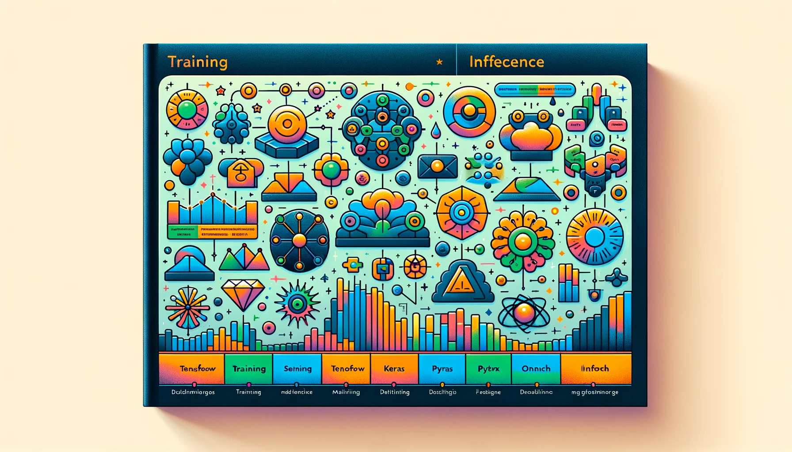

6 Framework di IA
Risorse: Slide, Video, Esercizi, Laboratori

Questo capitolo esplora il panorama dei framework di intelligenza artificiale che fungono da base per lo sviluppo di sistemi di apprendimento automatico. I framework di intelligenza artificiale forniscono gli strumenti, le librerie e gli ambienti per progettare, addestrare e distribuire modelli di apprendimento automatico. Esploreremo il percorso evolutivo di questi framework, analizzeremo il funzionamento di TensorFlow e forniremo approfondimenti sui componenti principali e sulle funzionalità avanzate che li definiscono.
Inoltre, esaminiamo la specializzazione dei framework su misura per esigenze specifiche, l’emergere di framework progettati espressamente per l’intelligenza artificiale embedded e i criteri per selezionare il framework più adatto ai vari progetti. Questa esplorazione sarà completata da uno sguardo alle tendenze future che dovrebbero modellare il panorama dei framework di apprendimento automatico nei prossimi anni.
Comprendere l’evoluzione e le capacità dei principali framework di apprendimento automatico. Ciò include modelli di esecuzione di grafici, paradigmi di programmazione, supporto per l’accelerazione hardware e come si sono espansi nel tempo.
Scoprire i componenti principali e le funzionalità dei framework, come grafi computazionali, pipeline di dati, algoritmi di ottimizzazione, loop di training, ecc., che consentono una creazione di modelli efficiente.
Confrontare i framework in diversi ambienti, come cloud, edge e TinyML. Scoprire come i framework si specializzano in base a vincoli computazionali e hardware.
Approfondire i framework embedded e focalizzarsi su TinyML come TensorFlow Lite Micro, CMSIS-NN, TinyEngine, ecc., e come ottimizzano per i microcontrollori.
Quando si sceglie un framework, si esplorano le considerazioni sulla conversione e l’implementazione del modello, tra cui latenza, utilizzo della memoria e supporto hardware.
Valutare i fattori chiave nella selezione del framework giusto, come prestazioni, compatibilità hardware, supporto della community, facilità d’uso, ecc., in base alle esigenze e ai vincoli specifici del progetto.
Comprendere i limiti dei framework attuali e le potenziali tendenze future, come l’uso del ML per migliorare i framework, i sistemi ML decomposti e i compilatori ad alte prestazioni.
6.1 Introduzione
I framework di machine learning [apprendimento automatico] forniscono gli strumenti e l’infrastruttura per creare, addestrare e distribuire in modo efficiente modelli di apprendimento automatico. In questo capitolo esploreremo l’evoluzione e le capacità chiave dei principali framework come TensorFlow (TF), PyTorch e framework specializzati per dispositivi embedded. Ci immergeremo nei componenti come grafi computazionali, algoritmi di ottimizzazione, accelerazione hardware e altro che consentono agli sviluppatori di creare rapidamente modelli performanti. Comprendere questi framework è essenziale per sfruttare la potenza del deep learning in tutto lo spettro, dal cloud ai dispositivi edge [periferici].
I framework di apprendimento automatico gestiscono gran parte della complessità dello sviluppo di modelli tramite API di alto livello e linguaggi specifici per dominio che consentono ai professionisti di creare rapidamente modelli combinando componenti e astrazioni predefiniti. Ad esempio, framework come TensorFlow e PyTorch forniscono API Python per definire architetture di reti neurali utilizzando livelli, ottimizzatori, set di dati e altro. Ciò consente un’iterazione rapida rispetto alla codifica di ogni dettaglio del modello partendo da zero.
Una capacità chiave offerta da questi framework è rappresentata dai motori di training distribuiti che possono scalare l’addestramento del modello su cluster di GPU e TPU. Ciò rende possibile il training di modelli all’avanguardia con miliardi o trilioni di parametri su vasti set di dati. I framework si integrano anche con hardware specializzato come le GPU NVIDIA per accelerare ulteriormente il training tramite ottimizzazioni come la parallelizzazione ed efficienti operazioni matriciali.
Inoltre, i framework semplificano il deploy [distribuzione] di modelli finiti in produzione tramite strumenti come TensorFlow Serving per il model serving scalabile e TensorFlow Lite per l’ottimizzazione su dispositivi mobili ed edge. Altre capacità preziose includono visualizzazione, tecniche di ottimizzazione del modello come quantizzazione e potatura e monitoraggio delle metriche durante il training.
I principali framework open source come TensorFlow, PyTorch e MXNet alimentano gran parte della ricerca e dello sviluppo dell’IA oggi. Offerte commerciali come Amazon SageMaker e Microsoft Azure Machine Learning integrano questi framework open source con funzionalità proprietarie e strumenti aziendali.
Gli ingegneri e i professionisti del machine learning sfruttano questi framework robusti per concentrarsi su attività di alto valore come architettura del modello, progettazione delle feature e ottimizzazione degli iperparametri anziché sull’infrastruttura. L’obiettivo è creare e distribuire modelli performanti che risolvano in modo efficiente i problemi del mondo reale.
In questo capitolo, esploreremo i principali framework cloud odierni e il modo in cui hanno adattato modelli e strumenti specificamente per la distribuzione embedded ed edge. Confronteremo modelli di programmazione, hardware supportato, capacità di ottimizzazione e altro ancora per comprendere appieno in che modo i framework consentono un apprendimento automatico scalabile dal cloud all’edge.
6.2 Evoluzione dei Framework
I framework di apprendimento automatico si sono evoluti in modo significativo per soddisfare le diverse esigenze dei professionisti del machine learning e i progressi nelle tecniche di intelligenza artificiale. Qualche decennio fa, la creazione e l’addestramento di modelli di apprendimento automatico richiedevano un’ampia codifica e infrastruttura di basso livello. Oltre alla necessità di una codifica di basso livello, la prima ricerca sulle reti neurali era limitata da dati e potenza di calcolo insufficienti. Tuttavia, i framework di apprendimento automatico si sono evoluti notevolmente nell’ultimo decennio per soddisfare le crescenti esigenze dei professionisti e i rapidi progressi nelle tecniche di deep learning [apprendimento profondo]. Il rilascio di grandi set di dati come ImageNet (Deng et al. 2009) e i progressi nel calcolo parallelo con GPU hanno sbloccato il potenziale per reti neurali molto più profonde.
I primi framework di apprendimento automatico, Theano di Team et al. (2016) e Caffe di Jia et al. (2014), sono stati sviluppati da istituzioni accademiche. Theano è stato creato dal Montreal Institute for Learning Algorithms, mentre Caffe è stato sviluppato dal Berkeley Vision and Learning Center. Nel crescente interesse per il deep learning dovuto alle prestazioni all’avanguardia di AlexNet Krizhevsky, Sutskever, e Hinton (2012) sul dataset ImageNet, aziende private e singole persone hanno iniziato a sviluppare framework di ML, dando vita a Keras di Chollet (2018), Chainer di Tokui et al. (2019), TensorFlow di Google (Yu et al. 2018), CNTK di Microsoft (Seide e Agarwal 2016) e PyTorch di Facebook (Ansel et al. 2024).
Molti di questi framework ML possono essere suddivisi in framework di alto livello, di basso livello e di grafi computazionali statici e dinamici. I framework di alto livello forniscono un livello di astrazione più elevato rispetto a quelli di basso livello. I framework di alto livello hanno funzioni e moduli predefiniti per attività ML comuni, come la creazione, l’addestramento e la valutazione di modelli ML comuni, la preelaborazione dei dati, le funzionalità di progettazione e la visualizzazione dei dati, che i framework di basso livello non hanno. Pertanto, i framework di alto livello possono risultare più facili da usare ma sono meno personalizzabili rispetto a quelli di basso livello (ad esempio, gli utenti di framework di basso livello possono definire livelli personalizzati, funzioni “loss” [di perdita], algoritmi di ottimizzazione, ecc.). Esempi di framework di alto livello sono TensorFlow/Keras e PyTorch. Esempi di framework ML di basso livello includono TensorFlow con API di basso livello, Theano, Caffe, Chainer e CNTK.
Framework come Theano e Caffe utilizzavano grafi computazionali statici, che richiedevano la definizione anticipata dell’architettura completa del modello, limitandone così la flessibilità. Al contrario, i grafici dinamici vengono costruiti al volo per uno sviluppo più iterativo. Intorno al 2016, framework come PyTorch e TensorFlow 2.0 hanno iniziato ad adottare grafici dinamici, offrendo maggiore flessibilità per lo sviluppo del modello. Discuteremo di questi concetti e dettagli più avanti nella sezione Training dell’IA.
Lo sviluppo di questi framework ha suscitato un’esplosione di dimensioni e complessità del modello nel tempo, dai primi perceptron multistrato e reti convoluzionali ai moderni trasformatori con miliardi o trilioni di parametri. Nel 2016, i modelli ResNet di He et al. (2016) hanno raggiunto un’accuratezza ImageNet record con oltre 150 livelli e 25 milioni di parametri. Poi, nel 2020, il modello linguistico GPT-3 di OpenAI (Brown et al. 2020) ha spinto i parametri a un sorprendente numero di 175 miliardi utilizzando il parallelismo del modello nei framework per addestrare migliaia di GPU e TPU.
Ogni generazione di framework ha sbloccato nuove capacità che hanno alimentato il progresso:
Theano e TensorFlow (2015) hanno introdotto grafi computazionali e differenziazione automatica per semplificare la creazione di modelli.
CNTK (2016) ha aperto la strada a un addestramento distribuito efficiente combinando parallelismo di modelli e dati.
PyTorch (2016) ha fornito programmazione imperativa e grafici dinamici per una sperimentazione flessibile.
TensorFlow 2.0 (2019) ha impostato di default l’esecuzione Eager per intuitività e debug.
TensorFlow Graphics (2020) ha aggiunto strutture dati 3D per gestire nuvole di punti e mesh.
Negli ultimi anni, i framework sono convergenti. Figura 6.2 mostra che TensorFlow e PyTorch sono diventati i framework ML più dominanti, rappresentando oltre il 95% dei framework ML utilizzati nella ricerca e nella produzione. Figura 6.1 traccia un contrasto tra gli attributi di TensorFlow e PyTorch. Keras è stato integrato in TensorFlow nel 2019; Preferred Networks ha trasferito Chainer a PyTorch nel 2019; e Microsoft ha smesso di sviluppare attivamente CNTK nel 2022 per supportare PyTorch su Windows.
Un approccio unico non funziona bene in tutto lo spettro, dal cloud ai piccoli dispositivi edge. Diversi framework rappresentano varie filosofie sull’esecuzione di grafici, API dichiarative rispetto a quelle imperative e altro ancora. Le dichiarative definiscono cosa dovrebbe fare il programma, mentre le imperative si concentrano su come dovrebbe essere fatto passo dopo passo. Ad esempio, TensorFlow utilizza l’esecuzione di grafici e la modellazione in stile dichiarativo, mentre PyTorch adotta l’esecuzione rapida e la modellazione imperativa per una maggiore flessibilità con Python. Ogni approccio comporta dei compromessi che discuteremo in Sezione 6.3.7.
Gli attuali framework avanzati consentono ai professionisti di sviluppare e distribuire modelli sempre più complessi, un fattore chiave dell’innovazione nel campo dell’intelligenza artificiale. Questi framework continuano a evolversi ed espandere le loro capacità per la prossima generazione di machine learning. Per capire come questi sistemi continuano a evolversi, approfondiremo TensorFlow come esempio di come il framework sia cresciuto in complessità nel tempo.
6.3 Approfondimento su TensorFlow
TensorFlow è stato sviluppato dal team di Google Brain ed è stato rilasciato come libreria software open source il 9 novembre 2015. È stato progettato per il calcolo numerico utilizzando grafici di flusso di dati e da allora è diventato popolare per un’ampia gamma di applicazioni di apprendimento automatico e deep learning.
TensorFlow è un framework di training e inferenza che fornisce funzionalità integrate per gestire tutto, dalla creazione e training del modello alla distribuzione, come mostrato in Figura 6.3. Sin dal suo sviluppo iniziale, l’ecosistema TensorFlow è cresciuto fino a includere molte diverse “varietà” di TensorFlow, ciascuna pensata per consentire agli utenti di supportare ML su diverse piattaforme. In questa sezione, discuteremo principalmente solo del pacchetto core.
6.3.1 Ecosistema TF
TensorFlow Core: pacchetto principale con cui interagiscono la maggior parte degli sviluppatori. Fornisce una piattaforma completa e flessibile per definire, addestrare e distribuire modelli di apprendimento automatico. Include tf.keras come API di alto livello.
TensorFlow Lite: progettato per distribuire modelli leggeri su dispositivi mobili, embedded ed edge. Offre strumenti per convertire i modelli TensorFlow in un formato più compatto adatto a dispositivi con risorse limitate e fornisce modelli pre-addestrati ottimizzati per dispositivi mobili.
TensorFlow Lite Micro: progettato per eseguire modelli di apprendimento automatico su microcontrollori con risorse minime. Funziona senza la necessità di supporto del sistema operativo, librerie C o C++ standard o allocazione dinamica della memoria, utilizzando solo pochi kilobyte di memoria.
TensorFlow.js: libreria JavaScript che consente l’addestramento e la distribuzione di modelli di apprendimento automatico direttamente nel browser o su Node.js. Fornisce inoltre strumenti per il porting di modelli TensorFlow pre-addestrati nel formato browser-friendly.
TensorFlow su dispositivi edge (Coral): piattaforma di componenti hardware e strumenti software di Google che consente l’esecuzione di modelli TensorFlow su dispositivi edge, sfruttando Edge TPU per l’accelerazione.
TensorFlow Federated (TFF): framework per l’apprendimento automatico e altri calcoli su dati decentralizzati. TFF facilita l’apprendimento “federato”, consentendo l’addestramento del modello su molti dispositivi senza centralizzare i dati.
TensorFlow Graphics: libreria per l’utilizzo di TensorFlow per svolgere attività correlate alla grafica, tra cui l’elaborazione di forme 3D e nuvole di punti, utilizzando il deep learning.
TensorFlow Hub: repository di componenti di modelli di apprendimento automatico riutilizzabili che consente agli sviluppatori di riutilizzare componenti di modelli pre-addestrati, facilitando l’apprendimento per trasferimento e la composizione del modello.
TensorFlow Serving: framework progettato per servire e distribuire modelli di apprendimento automatico per l’inferenza in ambienti di produzione. Fornisce strumenti per il versioning e l’aggiornamento dinamico dei modelli distribuiti senza interruzione del servizio.
TensorFlow Extended (TFX): piattaforma end-to-end progettata per distribuire e gestire pipeline di apprendimento automatico in ambienti di produzione. TFX comprende validazione dei dati, pre-elaborazione, addestramento del modello, convalida e componenti di servizio.
TensorFlow è stato sviluppato per affrontare le limitazioni di DistBelief (Yu et al. 2018)—il framework in uso presso Google dal 2011 al 2015—offrendo flessibilità lungo tre direttrici: 1) definizione di nuovi livelli [livelli], 2) perfezionamento degli algoritmi di training e 3) definizione di nuovi algoritmi di training. Per comprendere quali limitazioni di DistBelief hanno portato allo sviluppo di TensorFlow, faremo prima una breve panoramica dell’architettura del server dei parametri utilizzata da DistBelief (Dean et al. 2012).
L’architettura Parameter Server (PS) è un design popolare per distribuire il training di modelli di apprendimento automatico, in particolare reti neurali profonde, su più macchine. L’idea fondamentale è di separare l’archiviazione e la gestione dei parametri del modello dal calcolo utilizzato per aggiornare tali parametri. In genere, i server dei parametri gestiscono l’archiviazione e la gestione dei parametri del modello, suddividendoli su più server. I processi worker eseguono le attività di calcolo, tra cui l’elaborazione dei dati e il calcolo dei gradienti, che vengono poi inviati ai server dei parametri per l’aggiornamento.
Storage: I processi del server dei parametri stateful [con stato] gestivano l’archiviazione e la gestione dei parametri del modello. Data l’ampia scala dei modelli e la natura distribuita del sistema, questi parametri erano condivisi tra più server dei parametri. Ogni server manteneva una parte dei parametri del modello, rendendolo "stateful" poiché doveva mantenere e gestire questo stato durante il processo di training.
Computation: I processi worker, che potevano essere eseguiti in parallelo, erano senza stato e puramente computazionali. Elaboravano dati e calcolavano gradienti senza mantenere alcuno stato o memoria a lungo termine (M. Li et al. 2014). I worker non conservavano informazioni tra le diverse attività. Invece, comunicavano periodicamente con i server dei parametri per recuperare i parametri più recenti e restituire i gradienti calcolati.
Andiamo a comprendere in modo completo gli algoritmi di apprendimento automatico di base utilizzando TensorFlow e le loro applicazioni pratiche nell’analisi dei dati e nella modellazione predittiva. Inizieremo con la regressione lineare per prevedere i tassi di sopravvivenza dal set di dati del Titanic. Poi, utilizzando TensorFlow, costruiremo classificatori per identificare diverse specie di fiori in base ai loro attributi. Successivamente, utilizzeremo l’algoritmo K-Means e la sua applicazione nella segmentazione dei set di dati in cluster coesi. Infine, applicheremo modelli hidden [nascosti] di Markov (HMM) per prevedere i pattern meteorologici.

Qui vedremo come costruire un modello di apprendimento automatico in miniatura per microcontrollori. Costruiremo una mini rete neurale semplificata per apprendere dai dati anche con risorse limitate e ottimizzata per l’implementazione riducendo il nostro modello per un uso efficiente sui microcontrollori. TensorFlow Lite, una potente tecnologia derivata da TensorFlow, riduce i modelli per dispositivi minuscoli e aiuta ad abilitare funzionalità sul dispositivo come il riconoscimento delle immagini nei dispositivi smart [intelligenti]. Viene utilizzato nell’edge computing per consentire analisi e decisioni più rapide nei dispositivi che elaborano i dati localmente.

DistBelief e la sua architettura definita sopra sono stati fondamentali per abilitare il deep learning distribuito in Google, ma hanno anche introdotto delle limitazioni che hanno motivato lo sviluppo di TensorFlow:
6.3.2 Grafico di Calcolo Statico
I parametri del modello sono distribuiti su vari server di parametri nell’architettura del server di parametri. Poiché DistBelief è stato progettato principalmente per il paradigma della rete neurale, i parametri corrispondevano a una struttura di rete neurale fissa. Se il computation graph [grafico di calcolo] fosse dinamico, la distribuzione e il coordinamento dei parametri diventerebbero significativamente più complicati. Ad esempio, una modifica nel grafico potrebbe richiedere l’inizializzazione di nuovi parametri o la rimozione di quelli esistenti, complicando le attività di gestione e sincronizzazione dei server di parametri. Ciò ha reso più difficile implementare modelli al di fuori del framework neurale o modelli che richiedevano grafici di calcolo dinamici.
TensorFlow è stato progettato come un framework di calcolo più generale che esprime il calcolo come un grafico del flusso di dati. Ciò consente una più ampia varietà di modelli e algoritmi di apprendimento automatico al di fuori delle reti neurali e fornisce flessibilità nel perfezionamento dei modelli.
6.3.3 Usabilità & Distribuzione
Il modello del server dei parametri delinea i ruoli (nodi worker e server dei parametri) ed è ottimizzato per i deployment [distribuzioni] dei data center, che potrebbero essere ottimali solo per alcuni casi d’uso. Ad esempio, questa divisione introduce overhead o complessità sui dispositivi edge o in altri ambienti non data center.
TensorFlow è stato creato per funzionare su più piattaforme, dai dispositivi mobili e edge all’infrastruttura cloud. Mirava anche a essere più leggero e intuitivo per gli sviluppatori e a fornire facilità d’uso tra il training locale e quello distribuito.
6.3.4 Progettazione dell’Architettura
Invece di utilizzare l’architettura del server dei parametri, TensorFlow distribuisce i task [attività] su un cluster. Queste attività sono processi denominati che possono comunicare su una rete e ciascuna può eseguire la struttura principale di TensorFlow, il grafico del flusso di dati e l’interfaccia con vari dispositivi di elaborazione (come CPU o GPU). Questo grafico [grafo] è una rappresentazione diretta in cui i nodi simboleggiano le operazioni di elaborazione e gli edge rappresentano i tensori (dati) che scorrono tra queste operazioni.
Nonostante l’assenza di server di parametri tradizionali, alcuni “task PS” memorizzano e gestiscono parametri che ricordano i server di parametri di altri sistemi. I task rimanenti, che di solito gestiscono calcoli, elaborazione dati e gradienti, sono denominati “task worker”. I task PS di TensorFlow possono eseguire qualsiasi calcolo rappresentabile dal grafico del flusso di dati, il che significa che non sono limitati solo all’archiviazione dei parametri e il calcolo può essere distribuito. Questa capacità li rende significativamente più versatili e offre agli utenti il potere di programmare i task PS utilizzando l’interfaccia TensorFlow standard, la stessa che userebbero per definire i loro modelli. Come accennato in precedenza, la struttura dei grafici del flusso di dati li rende anche intrinsecamente buoni per il parallelismo, consentendo l’elaborazione di grandi set di dati.
6.3.5 Funzionalità Native & Keras
TensorFlow include librerie per aiutare gli utenti a sviluppare e distribuire più modelli specifici per i casi d’uso e, poiché questo framework è open source, questo elenco continua a crescere. Queste librerie affrontano l’intero ciclo di vita dello sviluppo ML: preparazione dei dati, creazione di modelli, distribuzione e IA responsabile.
Uno dei maggiori vantaggi di TensorFlow è la sua integrazione con Keras, anche se, come vedremo nella prossima sezione, Pytorch ha recentemente aggiunto un’integrazione Keras. Keras è un altro framework ML creato per essere estremamente intuitivo e, di conseguenza, ha un alto livello di astrazione. Parleremo di Keras più approfonditamente più avanti in questo capitolo. Tuttavia, quando si discute della sua integrazione con TensorFlow, è importante notare che era stato originariamente creato per essere indipendente dal backend. Ciò significa che gli utenti potrebbero astrarre queste complessità, offrendo un modo più pulito e intuitivo per definire e addestrare modelli senza preoccuparsi di problemi di compatibilità con diversi backend. Gli utenti di TensorFlow hanno evidenziato alcuni problemi sull’usabilità e la leggibilità dell’API di TensorFlow, quindi, man mano che TF acquisiva importanza, ha integrato Keras come API di alto livello. Questa integrazione ha offerto grandi vantaggi agli utenti di TensorFlow poiché ha introdotto una leggibilità e una portabilità più intuitive dei modelli, sfruttando comunque le potenti funzionalità di backend, il supporto di Google e l’infrastruttura per distribuire i modelli su varie piattaforme.
Qui, impareremo come utilizzare Keras, un’API di reti neurali di alto livello, per lo sviluppo e l’addestramento (training) di modelli. Esploreremo l’API funzionale per la creazione di modelli concisi, comprenderemo le classi “loss” e metriche per la valutazione dei modelli e utilizzeremo gli ottimizzatori nativi per aggiornare i parametri del modello durante l’addestramento. Inoltre, scopriremo come definire layer e metriche personalizzati su misura per le nostre esigenze. Infine, esamineremo i cicli di addestramento di Keras per semplificare il processo di addestramento delle reti neurali su grandi set di dati. Questa conoscenza ci consentirà di costruire e ottimizzare modelli di reti neurali in varie applicazioni di machine learning e intelligenza artificiale.

6.3.6 Limitazioni e Sfide
TensorFlow è uno dei framework di deep learning più popolari, ma ha dovuto affrontare critiche e debolezze, principalmente legate all’usabilità e all’utilizzo delle risorse. Sebbene vantaggioso, il ritmo rapido degli aggiornamenti tramite il supporto di Google ha talvolta portato a problemi di retrocompatibilità, funzioni deprecate e documentazione instabile. Inoltre, anche con l’implementazione di Keras, la sintassi e la curva di apprendimento di TensorFlow possono risultare difficili per i nuovi utenti. Un’altra critica importante di TensorFlow è il suo elevato overhead e consumo di memoria dovuto alla gamma di librerie integrate e al supporto. Sebbene le versioni ridotte possano risolvere alcuni di questi problemi, potrebbero comunque essere limitate in ambienti con risorse limitate.
6.3.7 PyTorch & TensorFlow
PyTorch e TensorFlow si sono affermati come leader nel settore. Entrambi i framework offrono funzionalità robuste ma differiscono per filosofie di progettazione, facilità d’uso, ecosistema e capacità di distribuzione.
Filosofia di Progettazione e Paradigma di Programmazione: PyTorch utilizza un grafo computazionale dinamico denominato eager execution [esecuzione rapida]. Ciò lo rende intuitivo e facilita il debug poiché le operazioni vengono eseguite immediatamente e possono essere ispezionate al volo. Al contrario, le versioni precedenti di TensorFlow erano incentrate su un grafo computazionale statico, che richiedeva la definizione completa del grafico prima dell’esecuzione. Tuttavia, TensorFlow 2.0 ha introdotto la “eager execution” per default, rendendolo più allineato con PyTorch. La natura dinamica di PyTorch e l’approccio basato su Python hanno consentito la sua semplicità e flessibilità, in particolare per la prototipazione rapida. L’approccio grafico statico di TensorFlow nelle sue versioni precedenti aveva una curva di apprendimento più ripida; l’introduzione di TensorFlow 2.0, con la sua integrazione Keras come API di alto livello, ha semplificato notevolmente il processo di sviluppo.
Deployment: PyTorch è fortemente favorito negli ambienti di ricerca, ma la distribuzione dei modelli PyTorch in contesti di produzione è sempre stata un problema. Tuttavia, la distribuzione è diventata più fattibile con l’introduzione di TorchScript, lo strumento TorchServe e PyTorch Mobile. TensorFlow si distingue per la sua forte scalabilità e capacità di distribuzione, in particolare su piattaforme embedded e mobili con TensorFlow Lite. TensorFlow Serving e TensorFlow.js facilitano ulteriormente la distribuzione in vari ambienti, conferendogli così una portata più ampia nell’ecosistema.
Prestazioni: Entrambi i framework offrono un’accelerazione hardware efficiente per le loro operazioni. Tuttavia, TensorFlow ha un flusso di lavoro di ottimizzazione leggermente più robusto, come il compilatore XLA (Accelerated Linear Algebra), che può aumentare ulteriormente le prestazioni. Il suo grafo computazionale statico era anche vantaggioso per alcune ottimizzazioni nelle prime versioni.
Ecosistema: PyTorch ha un ecosistema in crescita con strumenti come TorchServe per servire modelli e librerie come TorchVision, TorchText e TorchAudio per domini specifici. Come abbiamo detto prima, TensorFlow ha un ecosistema ampio e maturo. TensorFlow Extended (TFX) fornisce una piattaforma end-to-end per distribuire pipeline di apprendimento automatico di produzione. Altri strumenti e librerie includono TensorFlow Lite, TensorFlow Lite Micro, TensorFlow.js, TensorFlow Hub e TensorFlow Serving.
Tabella 6.1 fornisce un’analisi comparativa:
| Aspetto | Pytorch | TensorFlow |
|---|---|---|
| Filosofia di Progettazione | Grafo computazionale dinamico (eager execution) | Grafo computazionale statico (prime versioni); Esecuzione rapida in TensorFlow 2.0 |
| Deployment | Tradizionalmente impegnativa; Migliorata con TorchScript e TorchServe | Scalabile, specialmente su piattaforme embedded con TensorFlow Lite |
| Prestazioni e Ottimizzazione | Accelerazione GPU efficiente | Ottimizzazione robusta con compilatore XLA |
| Ecosistema | TorchServe, TorchVision, TorchText, TorchAudio, PyTorch Mobile | TensorFlow Extended (TFX), TensorFlow Lite, TensorFlow Lite Micro TensorFlow.js, TensorFlow Hub, TensorFlow Serving |
| Facilità d’uso | Preferito per il suo approccio Pythonic e la prototipazione rapida | Curva di apprendimento inizialmente ripida; Semplificato con Keras in TensorFlow 2.0 |
6.4 Componenti di Base del Framework
Dopo aver introdotto i popolari framework di machine learning e aver fornito un confronto di alto livello, questa sezione presenterà le funzionalità principali che formano la struttura di questi framework. Tratterà la struttura speciale chiamata tensori, che questi framework utilizzano per gestire più facilmente dati multidimensionali complessi. Si vedrà anche come questi framework rappresentano diversi tipi di architetture di reti neurali e le loro operazioni richieste tramite grafi computazionali. Inoltre, si vedrà come offrono strumenti che rendono lo sviluppo di modelli di machine learning più astratto ed efficiente, come caricatori di dati, algoritmi di ottimizzazione delle perdite implementate, tecniche di differenziazione efficienti e la capacità di accelerare il processo di training su acceleratori hardware.
6.4.1 Strutture Dati Tensoriali
Per comprendere i tensori, partiamo dai concetti familiari dell’algebra lineare. Come mostrato in Figura 6.5, i vettori possono essere rappresentati come una pila di numeri in un array unidimensionale. Le matrici seguono la stessa idea e si possono pensare a loro come a molti vettori impilati l’uno sull’altro, rendendoli bidimensionali. I tensori di dimensioni superiori funzionano allo stesso modo. Un tensore tridimensionale è semplicemente un insieme di matrici impilate l’una sull’altra in una direzione aggiuntiva. Pertanto, vettori e matrici possono essere considerati casi speciali di tensori con dimensioni 1D e 2D, rispettivamente.
I tensori offrono una struttura flessibile che può rappresentare dati in dimensioni superiori. Ad esempio, per rappresentare i dati di un’immagine, i pixel in ogni posizione di un’immagine sono strutturati come matrici. Tuttavia, le immagini non sono rappresentate da una sola matrice di valori di pixel; in genere hanno tre canali in cui ogni canale è una matrice contenente valori di pixel che rappresentano l’intensità di rosso, verde o blu. Insieme, questi canali creano un’immagine colorata. Senza i tensori, archiviare tutte queste informazioni da più matrici può risultare complesso. Con i tensori, è facile contenere i dati dell’immagine in un singolo tensore tridimensionale, con ogni numero che rappresenta un certo valore di colore in una posizione specifica nell’immagine.
Non finisce qui. Se volessimo archiviare una serie di immagini, potremmo usare un tensore quadridimensionale, in cui la nuova dimensione rappresenta immagini diverse. Ciò significa che si stanno archiviando più immagini, ciascuna con tre matrici che rappresentano i tre canali del colore. Questo dà un’idea dell’utilità dei tensori quando si gestiscono dati multidimensionali in modo efficiente.
I tensori hanno anche un attributo unico che consente ai framework di calcolare automaticamente i gradienti, semplificando l’implementazione di modelli complessi e algoritmi di ottimizzazione. Nel machine learning, come discusso nel Capitolo 3, la backpropagation richiede di prendere la derivata delle equazioni. Una delle caratteristiche principali dei tensori in PyTorch e TensorFlow è la loro capacità di tracciare i calcoli e calcolare i gradienti. Ciò è fondamentale per la backpropagation nelle reti neurali. Ad esempio, in PyTorch, si può usare l’attributo requires_grad, che consente di calcolare e memorizzare automaticamente i gradienti durante il “backward pass”, facilitando il processo di ottimizzazione. Analogamente, in TensorFlow, tf.GradientTape registra le operazioni per la differenziazione automatica.
Si consideri questa semplice equazione matematica che si vuole differenziare. Matematicamente, il calcolo del gradiente si effettua nel modo seguente:
Dato: \[ y = x^2 \]
La derivata di \(y\) rispetto a \(x\) è: \[ \frac{dy}{dx} = 2x \]
Quando \(x = 2\): \[ \frac{dy}{dx} = 2*2 = 4 \]
Il gradiente di \(y\) rispetto a \(x\), con \(x = 2\), è 4.
Una potente caratteristica dei tensori in PyTorch e TensorFlow è la loro capacità di calcolare facilmente le derivate (gradienti). Ecco gli esempi di codice corrispondenti in PyTorch e TensorFlow:
import torch
# Create a tensor with gradient tracking
x = torch.tensor(2.0, requires_grad=True)
# Define a simple function
y = x ** 2
# Compute the gradient
y.backward()
# Print the gradient
print(x.grad)
# Output
tensor(4.0)import tensorflow as tf
# Create a tensor with gradient tracking
x = tf.Variable(2.0)
# Define a simple function
with tf.GradientTape() as tape:
y = x ** 2
# Compute the gradient
grad = tape.gradient(y, x)
# Print the gradient
print(grad)
# Output
tf.Tensor(4.0, shape=(), dtype=float32)Questa differenziazione automatica è una potente funzionalità dei tensori in framework come PyTorch e TensorFlow, che semplifica l’implementazione e l’ottimizzazione di modelli complessi di apprendimento automatico.
6.4.2 Grafi computazionali
Definizione di Grafico
I grafi computazionali sono una componente chiave di framework di deep learning come TensorFlow e PyTorch. Ci consentono di esprimere architetture di reti neurali complesse in modo efficiente e differenziato. Un grafo computazionale è costituito da un grafo aciclico diretto (directed acyclic graph, DAG) in cui ogni nodo rappresenta un’operazione o una variabile e gli spigoli rappresentano le dipendenze dei dati tra di essi.
È importante differenziare i grafi computazionali dai diagrammi di reti neurali, come quelli per i perceptron multistrato (multilayer perceptrons, MLP), che rappresentano nodi e layer. I diagrammi di reti neurali, come illustrato nel Capitolo 3, visualizzano l’architettura e il flusso di dati attraverso nodi e layer, fornendo una comprensione intuitiva della struttura del modello. Al contrario, i grafi computazionali forniscono una rappresentazione di basso livello delle operazioni matematiche sottostanti e delle dipendenze dei dati necessarie per implementare e addestrare queste reti.
Ad esempio, un nodo potrebbe rappresentare un’operazione di moltiplicazione di matrici, prendendo due matrici di input (o tensori) e producendo una matrice di output (o tensore). Per visualizzarlo, si consideri il semplice esempio in Figura 7.3. Il grafo aciclico orientato sopra calcola \(z = x \times y\), dove ogni variabile è composta solo da numeri.
Framework come TensorFlow e PyTorch creano grafi computazionali per implementare le architetture delle reti neurali che in genere rappresentiamo con diagrammi. Quando si definisce un layer di rete neurale nel codice (ad esempio, un “layer denso” in TensorFlow), il framework costruisce un grafo computazionale che include tutte le operazioni necessarie (come moltiplicazione di matrici, addizione e funzioni di attivazione) e le relative dipendenze dai dati. Questo grafo consente al framework di gestire in modo efficiente il flusso di dati, ottimizzare l’esecuzione delle operazioni e calcolare automaticamente i gradienti per l’addestramento. Internamente, i grafi computazionali rappresentano astrazioni per layer comuni come quelli convoluzionali, di pooling, ricorrenti e densi, con dati che includono attivazioni, pesi e bias rappresentati in tensori. Questa rappresentazione consente un calcolo efficiente, sfruttando la struttura del grafico per parallelizzare le operazioni e applicare ottimizzazioni.
Alcuni livelli comuni che i grafi computazionali potrebbero implementare includono layer convoluzionali, di attenzione, ricorrenti e densi. I layer fungono da astrazioni di livello superiore che definiscono calcoli specifici in cima alle operazioni di base rappresentate nel grafo. Ad esempio, un layer Denso esegue la moltiplicazione e l’addizione di matrici tra tensori di input, peso e bias. È importante notare che un layer opera su tensori come input e output; il layer stesso non è un tensore. Alcune differenze chiave tra layer e tensori sono:
I layer contengono stati come pesi e bias. I tensori sono senza stato, contengono solo dati.
I layer possono modificare lo stato interno durante l’addestramento. I tensori sono immutabili/di sola lettura.
I layer sono astrazioni di livello superiore. I tensori sono a un livello inferiore e rappresentano direttamente dati e operazioni matematiche.
I layer definiscono pattern di calcolo fissi. I tensori scorrono tra i livelli durante l’esecuzione.
I layer vengono utilizzati indirettamente durante la creazione di modelli. I tensori scorrono tra i livelli durante l’esecuzione.
Quindi, mentre i tensori sono una struttura dati fondamentale che i layer consumano e producono, i layer hanno funzionalità aggiuntive per definire operazioni parametrizzate e addestramento. Mentre un layer configura le operazioni tensoriali in background, il layer rimane distinto dagli oggetti tensoriali. L’astrazione del layer rende la creazione e l’addestramento di reti neurali molto più intuitive. Questa astrazione consente agli sviluppatori di creare modelli impilando insieme questi layer senza implementare la logica del layer. Ad esempio, la chiamata di tf.keras.layers.Conv2D in TensorFlow crea un layer convoluzionale. Il framework gestisce il calcolo delle convoluzioni, la gestione dei parametri, ecc. Ciò semplifica lo sviluppo del modello, consentendo agli sviluppatori di concentrarsi sull’architettura anziché sulle implementazioni di basso livello. Le astrazioni dei layer utilizzano implementazioni altamente ottimizzate per le prestazioni. Consentono inoltre la portabilità, poiché la stessa architettura può essere eseguita su backend hardware diversi come GPU e TPU.
Inoltre, i grafi computazionali includono funzioni di attivazione come ReLU, sigmoide e tanh che sono essenziali per le reti neurali e molti framework le forniscono come astrazioni standard. Queste funzioni introducono non linearità che consentono ai modelli di approssimare funzioni complesse. I framework le forniscono come operazioni semplici e predefinite che possono essere utilizzate durante la costruzione di modelli, ad esempio if.nn.relu in TensorFlow. Questa astrazione consente flessibilità, poiché gli sviluppatori possono facilmente scambiare le funzioni di attivazione per ottimizzare le prestazioni. Le attivazioni predefinite sono inoltre ottimizzate dal framework per un’esecuzione più rapida.
Negli ultimi anni, modelli come ResNets e MobileNets sono emersi come architetture popolari, con i framework attuali che li pre-confezionano come grafi computazionali. Invece di preoccuparsi dei dettagli, gli sviluppatori possono utilizzarli come punto di partenza, personalizzandoli secondo necessità sostituendo i layer. Ciò semplifica e velocizza lo sviluppo del modello, evitando di reinventare le architetture da zero. I modelli predefiniti includono implementazioni ben collaudate e ottimizzate che garantiscono buone prestazioni. Il loro design modulare consente inoltre di trasferire le funzionalità apprese a nuove attività tramite apprendimento tramite trasferimento. Queste architetture predefinite forniscono i mattoni ad alte prestazioni per creare rapidamente modelli robusti.
Queste astrazioni di layer, funzioni di attivazione e architetture predefinite fornite dai framework costituiscono un grafo computazionale. Quando un utente definisce un layer in un framework (ad esempio, tf.keras.layers.Dense()), il framework configura nodi e bordi del grafo computazionale per rappresentare tale layer. I parametri del layer come pesi e bias diventano variabili nel grafo. I calcoli del layer diventano nodi operativi (come x e y nella figura sopra). Quando si chiama una funzione di attivazione come tf.nn.relu(), il framework aggiunge un nodo operativo ReLU al grafo. Le architetture predefinite sono solo sottografi preconfigurati che possono essere inseriti nel grafo del modello. Quindi, la definizione del modello tramite astrazioni di alto livello crea un grafo computazionale: i livelli, le attivazioni e le architetture che utilizziamo diventano nodi e rami del grafo.
Costruiamo implicitamente un grafo computazionale quando definiamo un’architettura di rete neurale in un framework. Il framework utilizza questo grafo per determinare le operazioni da eseguire durante l’addestramento e l’inferenza. I grafi computazionali offrono diversi vantaggi rispetto al codice grezzo e questa è una delle funzionalità principali offerte da un buon framework di ML:
Rappresentazione esplicita del flusso di dati e delle operazioni
Capacità di ottimizzare il grafo prima dell’esecuzione
Differenziazione automatica per il training
Agnosticismo linguistico: il grafo può essere tradotto per essere eseguito su GPU, TPU, ecc.
Portabilità: il grafo può essere serializzato, salvato e ripristinato in seguito
I grafi computazionali sono i componenti fondamentali dei framework di ML. La definizione del modello tramite astrazioni di alto livello crea un grafo computazionale: i layer, le attivazioni e le architetture che utilizziamo diventano nodi e rami del grafico. I compilatori e gli ottimizzatori del framework operano su questo grafo per generare codice eseguibile. Le astrazioni forniscono un’API intuitiva per gli sviluppatori per la creazione di grafi computazionali. Sotto, ci sono ancora grafi! Quindi, anche se non si possono manipolare direttamente i grafi come utente del framework, consentono di eseguire ad alto livello e in modo efficiente le specifiche del modello. Le astrazioni semplificano la creazione del modello, mentre i grafi computazionali la rendono possibile.
Grafi Statici vs. Dinamici
I framework di deep learning hanno tradizionalmente seguito uno dei due approcci per esprimere grafi computazionali.
Grafi statici (declare-then-execute): Con questo modello, l’intero grafo computazionale deve essere definito in anticipo prima di eseguirlo. Tutte le operazioni e le dipendenze dei dati devono essere specificate durante la fase di dichiarazione. TensorFlow originariamente seguiva questo approccio statico: i modelli venivano definiti in un contesto separato e poi veniva creata una sessione per eseguirli. Il vantaggio dei grafi statici è che consentono un’ottimizzazione più aggressiva poiché il framework può vedere il grafo completo. Tuttavia, tende anche a essere meno flessibile per la ricerca e l’interattività. Le modifiche al grafo richiedono la nuova dichiarazione del modello completo.
Per esempio:
x = tf.placeholder(tf.float32)
y = tf.matmul(x, weights) + biasesIn questo esempio, x è un segnaposto per i dati di input e y è il risultato di un’operazione di moltiplicazione di matrici seguita da un’addizione. Il modello è definito in questa fase di dichiarazione, in cui tutte le operazioni e le variabili devono essere specificate in anticipo.
Una volta definito l’intero grafo, il framework lo compila e lo ottimizza. Ciò significa che i passaggi computazionali sono definitivamente “scolpiti” e il framework può applicare varie ottimizzazioni per migliorare l’efficienza e le prestazioni. Quando in seguito si esegue il grafo, si forniscono i tensori di input effettivi e le operazioni predefinite vengono eseguite nella sequenza ottimizzata.
Questo approccio è simile alla creazione di un progetto in cui ogni dettaglio è pianificato prima dell’inizio della costruzione. Sebbene ciò consenta potenti ottimizzazioni, significa anche che qualsiasi modifica al modello richiede la ridefinizione dell’intero grafo da zero.
Grafi dinamici (define-by-run): A differenza della dichiarazione (di tutto) prima e dell’esecuzione poi, il grafo viene creato dinamicamente durante l’esecuzione. Non esiste una fase di dichiarazione separata: le operazioni vengono eseguite immediatamente come definite. Questo stile è imperativo e flessibile, facilitando la sperimentazione.
PyTorch utilizza grafi dinamici, creandoli al volo mentre avviene l’esecuzione. Ad esempio, si consideri il seguente frammento di codice, in cui il grafo viene creato durante l’esecuzione:
x = torch.randn(4,784)
y = torch.matmul(x, weights) + biasesL’esempio sopra non ha fasi separate di compilazione/build/esecuzione. Le operazioni definiscono ed eseguono immediatamente. Con i grafi dinamici, la definizione è intrecciata con l’esecuzione, fornendo un flusso di lavoro più intuitivo e interattivo. Tuttavia, lo svantaggio è che c’è meno potenziale di ottimizzazione poiché il framework vede solo il grafo mentre viene creato. Figura 6.7 mostra le differenze tra un grafo di calcolo statico e uno dinamico.
Di recente, la distinzione si è offuscata poiché i framework adottano entrambe le modalità. TensorFlow 2.0 passa automaticamente alla modalità di grafo dinamico, consentendo agli utenti di lavorare con quelli statici quando necessario. La dichiarazione dinamica offre flessibilità e facilità d’uso, rendendo i framework più intuitivi, mentre i grafi statici forniscono vantaggi di ottimizzazione a scapito dell’interattività. Il framework ideale bilancia questi approcci. Tabella 6.2 confronta i pro e i contro dei grafi di esecuzione statici e dinamici:
| Grafo di esecuzione | Pro | Contro |
|---|---|---|
| Statico (Declare-then-execute) |
|
|
| Dinamico (Define-by-run) |
|
|
6.4.3 Tool della Pipeline dei Dati
I grafi computazionali possono essere validi solo quanto i dati da cui apprendono e su cui lavorano. Pertanto, alimentare i dati di training in modo efficiente è fondamentale per ottimizzare le prestazioni della “deep neural network” [rete neurale profonda], sebbene spesso venga trascurata come una delle funzionalità principali. Molti framework di IA moderni forniscono pipeline specializzate per acquisire, elaborare e aumentare i set di dati per il training del modello.
Loader dei Dati
Al centro di queste pipeline ci sono i “data loader”, che gestiscono esempi di training di lettura da fonti come file, database e storage di oggetti. I data loader facilitano il caricamento e la pre-elaborazione efficienti dei dati, cruciali per i modelli di deep learning. Ad esempio, la pipeline di caricamento dati tf.data di TensorFlow è progettata per gestire questo processo. A seconda dell’applicazione, i modelli di deep learning richiedono diversi formati di dati come file CSV o cartelle di immagini. Alcuni formati popolari includono:
CSV, un formato versatile e semplice spesso utilizzato per dati tabellari.
TFRecord: Formato proprietario di TensorFlow, ottimizzato per le prestazioni.
Parquet: Storage a colonne, che offre compressione e recupero dati efficienti.
JPEG/PNG: Comunemente utilizzato per dati di immagini.
WAV/MP3: Formati prevalenti per dati audio.
Esempi di batch di data loader per sfruttare il supporto di vettorizzazione nell’hardware. Il “batching” si riferisce al raggruppamento di più dati per l’elaborazione simultanea, sfruttando le capacità di calcolo vettorizzate di hardware come le GPU. Sebbene le dimensioni tipiche dei batch siano comprese tra 32 e 512 esempi, la dimensione ottimale spesso dipende dall’ingombro di memoria dei dati e dai vincoli hardware specifici. I loader avanzati possono trasmettere in streaming set di dati virtualmente illimitati da dischi e archivi cloud. Trasmettono in streaming grandi dataset da dischi o reti anziché caricarli completamente in memoria, consentendo dimensioni illimitate.
I data loader possono anche mescolare i dati tra “epoche” per la randomizzazione e le funzionalità di preelaborazione in parallelo con l’addestramento del modello per accelerarne il processo. Mescolare casualmente l’ordine degli esempi tra epoche di training riduce il bias e migliora la generalizzazione.
I data loader supportano anche strategie di “caching” e “prefetching” per ottimizzare la distribuzione dei dati per un addestramento del modello rapido e fluido. Il caching [memorizzazione nella cache] dei batch preelaborati consente di riutilizzarli in modo efficiente durante più fasi di addestramento ed elimina l’elaborazione ridondante. Il prefetching, al contrario, comporta il precaricamento dei batch successivi, assicurando che il modello non resti mai inattivo in attesa di dati.
6.4.4 Data Augmentation
Framework di apprendimento automatico come TensorFlow e PyTorch forniscono strumenti per semplificare e snellire il processo di “data augmentation” [aumento dei dati], migliorando l’efficienza dell’espansione sintetica dei set di dati. Questi framework offrono funzionalità integrate per applicare trasformazioni casuali, come capovolgimento, ritaglio, rotazione, modifica del colore e aggiunta di rumore per le immagini. Per i dati audio, gli aumenti comuni comportano la miscelazione di clip con rumore di fondo o la modulazione di velocità, tono e volume.
Integrando gli strumenti di “augmentation” nella pipeline di dati, i framework consentono di applicare queste trasformazioni al volo durante ogni epoca di addestramento. Questo approccio incrementa la variazione nella distribuzione dei dati di addestramento, riducendo così l’overfitting e migliorando la generalizzazione del modello. Figura 6.8 mostra i casi di overfitting e underfitting. L’uso di “data loader” performanti in combinazione con ampie capacità di “augmentation” consente ai professionisti di alimentare in modo efficiente set di dati massicci e vari alle reti neurali.
Queste pipeline di dati “hands-off” rappresentano un miglioramento significativo in termini di usabilità e produttività. Consentono agli sviluppatori di concentrarsi maggiormente sull’architettura del modello e meno sulla manipolazione dei dati durante l’addestramento di modelli di deep learning.
6.4.5 Funzioni Loss e Algoritmi di Ottimizzazione
L’addestramento di una rete neurale è fondamentalmente un processo iterativo che cerca di minimizzare una funzione di loss [perdita]. L’obiettivo è di mettere a punto i pesi e i parametri del modello per produrre previsioni vicine alle vere etichette target. I framework di apprendimento automatico hanno notevolmente semplificato questo processo offrendo funzioni di loss [perdita] e algoritmi di ottimizzazione.
I framework di apprendimento automatico forniscono funzioni di perdita implementate che sono necessarie per quantificare la differenza tra le previsioni del modello e i valori reali. Diversi set di dati richiedono una diversa funzione di perdita per funzionare correttamente, poiché tale funzione indica al computer l’“obiettivo” a cui mirare. Le funzioni di perdita comunemente utilizzate includono il “Mean Squared Error (MSE)” [errore quadratico medio] per le attività di regressione, la “Cross-Entropy Loss” per le attività di classificazione, e la Kullback-Leibler (KL) per i modelli probabilistici. Ad esempio, tf.keras.losses di TensorFlow contiene una serie di queste funzioni di perdita comunemente utilizzate.
Gli algoritmi di ottimizzazione vengono utilizzati per trovare in modo efficiente il set di parametri del modello che minimizzano la funzione di perdita, assicurando che il modello funzioni bene sui dati di training e si generalizzi a nuovi dati. I framework moderni sono dotati di implementazioni efficienti di diversi algoritmi di ottimizzazione, molti dei quali sono varianti della “discesa del gradiente” con metodi stocastici e tassi di apprendimento adattivo. Alcuni esempi di queste varianti sono Stochastic Gradient Descent, Adagrad, Adadelta e Adam. L’implementazione di tali varianti è fornita in tf.keras.optimizers. Ulteriori informazioni con esempi chiari sono disponibili nella sezione Training dell’IA.
6.4.6 Supporto al Training del Modello
È richiesta una fase di compilazione prima di addestrare un modello di rete neurale definito. Durante questa fase, l’architettura di alto livello della rete neurale viene trasformata in un formato eseguibile ottimizzato. Questo processo comprende diverse fasi. La prima fase consiste nel costruire il grafo computazionale, che rappresenta tutte le operazioni matematiche e il flusso di dati all’interno del modello. Ne abbiamo discusso in precedenza.
Durante l’addestramento, l’attenzione è rivolta all’esecuzione del grafo computazionale. A ogni parametro all’interno del grafo, come pesi e bias, viene assegnato un valore iniziale. A seconda del metodo di inizializzazione scelto, questo valore potrebbe essere casuale o basato su una logica predefinita.
Il passaggio critico successivo è l’allocazione della memoria. La memoria essenziale è riservata alle operazioni del modello sia su CPU che su GPU, garantendo un’elaborazione efficiente dei dati. Le operazioni del modello vengono poi mappate sulle risorse hardware disponibili, in particolare GPU o TPU, per accelerare l’elaborazione. Una volta completata la compilazione, il modello viene preparato per l’addestramento.
Il processo di addestramento impiega vari strumenti per migliorare l’efficienza. L’elaborazione batch è comunemente utilizzata per massimizzare la produttività computazionale. Tecniche come la vettorizzazione consentono operazioni su interi array di dati anziché procedere elemento per elemento, il che aumenta la velocità. Ottimizzazioni come la “kernel fusion” (fare riferimento al capitolo Ottimizzazioni) amalgamano più operazioni in un’unica azione, riducendo al minimo il sovraccarico computazionale. Le operazioni possono anche essere segmentate in fasi, facilitando l’elaborazione simultanea di diversi mini-batch in varie parti.
I framework eseguono costantemente il checkpoint dello stato, preservando le versioni intermedie del modello durante l’addestramento. Ciò garantisce che i progressi vengano recuperati in caso di interruzione e che l’addestramento possa essere ripreso dall’ultimo checkpoint. Inoltre, il sistema monitora attentamente le prestazioni del modello rispetto a un set di dati di convalida. Se il modello inizia a sovradimensionarsi (se le sue prestazioni sul set di convalida diminuiscono), l’addestramento viene automaticamente interrotto, conservando risorse computazionali e tempo.
I framework di ML incorporano una combinazione di compilazione del modello, metodi di elaborazione batch avanzati e utilità come il checkpoint e l’arresto anticipato. Queste risorse gestiscono gli aspetti complessi delle prestazioni, consentendo ai professionisti di concentrarsi sullo sviluppo e l’addestramento del modello. Di conseguenza, gli sviluppatori sperimentano sia velocità che facilità quando utilizzano le capacità delle reti neurali.
6.4.7 Validazione e Analisi
Dopo aver addestrato i modelli di deep learning, i framework forniscono utilità per valutare le prestazioni e ottenere informazioni sul funzionamento dei modelli. Questi strumenti consentono una sperimentazione e un debug disciplinati.
Metriche di Valutazione
I framework includono implementazioni di comuni metriche di valutazione per la convalida:
Accuratezza: Frazione di previsioni corrette complessive. Sono ampiamente utilizzate per la classificazione.
Precisione: Delle previsioni positive, quante erano positive. Utile per set di dati sbilanciati.
Richiamo: Dei positivi effettivi, quanti ne abbiamo previsti correttamente? Misura della Completezza.
Punteggio F1: Media armonica di precisione e richiamo. Combina entrambe le metriche.
AUC-ROC - Area sotto la curva ROC. Sono utilizzate per l’analisi della soglia di classificazione.
MAP - Mean Average Precision. Valuta le previsioni classificate nel recupero/rilevamento.
Matrice di Confusione: Matrice che mostra i veri positivi, i veri negativi, i falsi positivi e i falsi negativi. Fornisce una visione più dettagliata delle prestazioni di classificazione.
Queste metriche quantificano le prestazioni del modello sui dati di convalida per il confronto.
Visualizzazione
Gli strumenti di visualizzazione forniscono informazioni sui modelli:
Curve di perdita: Tracciano la perdita di training e validazione nel tempo per individuare l’overfitting.
Loss curves [Griglie di attivazione]: Illustrano le funzionalità apprese dai filtri convoluzionali.
Projection [Proiezione]: Riduce la dimensionalità per una visualizzazione intuitiva.
Precision-recall curves [Curve di richiamo della precisione]: Valutano i compromessi di classificazione. Figura 6.9 mostra un esempio di una curva di precisione-richiamo.
Strumenti come TensorBoard per TensorFlow e TensorWatch per PyTorch consentono metriche e visualizzazioni in tempo reale durante il training.
6.4.8 Programmazione differenziabile
I metodi di addestramento per il machine learning come la backpropagation si basano sulla modifica della funzione di perdita rispetto alla modifica dei pesi (che essenzialmente è la definizione di derivata). Pertanto, la capacità di addestrare rapidamente ed efficientemente grandi modelli di machine learning si basa sulla capacità del computer di prendere derivate. Ciò rende la programmazione differenziabile uno degli elementi più importanti di un framework di apprendimento automatico.
Possiamo utilizzare quattro metodi principali per far sì che i computer prendano derivate. Innanzitutto, possiamo calcolare manualmente le derivate a mano e inserirle nel computer. Questo diventerebbe rapidamente un incubo con molti layer di reti neurali se dovessimo calcolare manualmente tutte le derivate nei passaggi di backpropagation. Un altro metodo è la differenziazione simbolica utilizzando sistemi di computer algebrici come Mathematica, che può introdurre un layer di inefficienza, poiché è necessario un livello di astrazione per prendere le derivate. Le derivate numeriche, la pratica di approssimare i gradienti utilizzando metodi di differenze finite, soffrono di molti problemi, tra cui elevati costi computazionali e dimensioni della griglia più grandi, che portano a molti errori. Ciò porta alla differenziazione automatica, che sfrutta le funzioni primitive che i computer utilizzano per rappresentare le operazioni per ottenere una derivata esatta. Con la differenziazione automatica, la complessità computazionale del calcolo del gradiente è proporzionale al calcolo della funzione stessa. Le complessità della differenziazione automatica non sono gestite dagli utenti finali al momento, ma le risorse per saperne di più possono essere trovate ampiamente, ad esempio qui. La differenziazione automatica e la programmazione differenziabile di oggi sono onnipresenti e vengono eseguite in modo efficiente e automatico dai moderni framework di machine learning.
6.4.9 Accelerazione Hardware
La tendenza a formare e distribuire continuamente modelli di apprendimento automatico più grandi ha reso necessario il supporto dell’accelerazione hardware per le piattaforme di machine-learning. Figura 6.10 mostra il gran numero di aziende che offrono acceleratori hardware in diversi domini, come il machine learning “Very Low Power” e quello “Embedded”. I “deep layer” delle reti neurali richiedono molte moltiplicazioni di matrici, che attraggono hardware in grado di calcolare rapidamente e in parallelo tali operazioni. In questo panorama, due architetture hardware, GPU e TPU, sono emerse come scelte principali per l’addestramento di modelli di apprendimento automatico.
L’uso di acceleratori hardware è iniziato con AlexNet, che ha aperto la strada a lavori futuri per utilizzare le GPU come acceleratori hardware per l’addestramento di modelli di visione artificiale. Le GPU, o “Graphics Processing Units” [unità di elaborazione grafica], eccellono nella gestione di molti calcoli contemporaneamente, il che le rende ideali per le operazioni matriciali centrali per l’addestramento delle reti neurali. La loro architettura, progettata per il rendering della grafica, è perfetta per le operazioni matematiche richieste nell’apprendimento automatico. Sebbene siano molto utili per le attività di apprendimento automatico e siano state implementate in molte piattaforme hardware, le GPU sono comunque di uso generale in quanto possono essere utilizzate per altre applicazioni.
D’altro canto, le Tensor Processing Units (TPU) sono unità hardware progettate specificamente per le reti neurali. Si concentrano sull’operazione di “moltiplicazione e accumulazione” (MAC) e il loro hardware è costituito da una grande matrice hardware che contiene elementi che calcolano in modo efficiente l’operazione MAC. Questo concetto, chiamato systolic array architecture, è stato ideato da Kung e Leiserson (1979), ma ha dimostrato di essere una struttura utile per calcolare in modo efficiente i prodotti matriciali e altre operazioni all’interno delle reti neurali (come le convoluzioni).
Sebbene le TPU possano ridurre drasticamente i tempi di addestramento, presentano anche degli svantaggi. Ad esempio, molte operazioni all’interno dei framework di apprendimento automatico (principalmente TensorFlow in questo caso, poiché la TPU si integra direttamente con esso) non sono supportate dalle TPU. Non possono inoltre supportare operazioni personalizzate dai framework di apprendimento automatico e la progettazione della rete deve essere strettamente allineata alle capacità hardware.
Oggi, le GPU NVIDIA dominano il training, supportate da librerie software come CUDA, cuDNN e TensorRT. I framework includono anche ottimizzazioni per massimizzare le prestazioni su questi tipi di hardware, come l’eliminazione di connessioni non importanti e la fusione di layer. La combinazione di queste tecniche con l’accelerazione hardware fornisce una maggiore efficienza. Per l’inferenza, l’hardware si sta spostando sempre di più verso ASIC e SoC ottimizzati. Le TPU di Google accelerano i modelli nei data center, mentre Apple, Qualcomm, la famiglia NVIDIA Jetson e altri ora producono chip “mobili” incentrati sull’intelligenza artificiale.
6.5 Funzionalità Avanzate
Oltre a fornire gli strumenti essenziali per il training di modelli di apprendimento automatico, i framework offrono anche funzionalità avanzate. Queste funzionalità includono la distribuzione del training su diverse piattaforme hardware, la facile messa a punto di grandi modelli pre-addestrati e l’esemplificazione del “federated learning”. L’implementazione di queste funzionalità in modo indipendente sarebbe altamente complessa e richiederebbe molte risorse, ma i framework semplificano questi processi, rendendo le tecniche avanzate di apprendimento automatico più accessibili.
6.5.1 Training distribuito
Poiché i modelli di apprendimento automatico sono diventati più grandi nel corso degli anni, è diventato essenziale per i modelli di grandi dimensioni utilizzare più nodi di elaborazione nel processo di training. Questo processo, l’apprendimento distribuito, ha consentito maggiori capacità di training, ma ha anche imposto problemi nell’implementazione.
Possiamo considerare tre diversi modi per distribuire il lavoro di training dei modelli di apprendimento automatico su più nodi di elaborazione. Il partizionamento dei dati di input (o parallelismo dei dati) si riferisce a più processori che eseguono lo stesso modello su diverse partizioni di input. Questa è l’implementazione più semplice ed è disponibile per molti framework di machine learning. La distribuzione più impegnativa del lavoro è rappresentata dal parallelismo del modello, che si riferisce a più nodi di elaborazione che lavorano su parti diverse del modello, e dal parallelismo del modello pipelined, che si riferisce a più nodi di elaborazione che lavorano su diversi layer del modello sullo stesso input. Gli ultimi due menzionati qui sono aree di ricerca attive.
I framework di ML che supportano l’apprendimento distribuito includono TensorFlow (tramite il suo modulo tf.distribute), PyTorch (tramite i suoi moduli torch.nn.DataParallel e torch.nn.DistributedDataParallel) e MXNet (tramite la sua API gluon).
6.5.2 Conversione del Modello
I modelli di machine learning hanno vari metodi per essere rappresentati e utilizzati in diversi framework e per diversi tipi di dispositivi. Ad esempio, un modello può essere convertito per essere compatibile con i framework di inferenza all’interno del dispositivo mobile. Il formato di default per i modelli TensorFlow sono i file di checkpoint contenenti pesi e architetture, necessari per riaddestrare i modelli. Tuttavia, i modelli vengono in genere convertiti nel formato TensorFlow Lite per la distribuzione mobile. TensorFlow Lite utilizza una rappresentazione compatta del “flat buffer” e ottimizzazioni per un’inferenza rapida su hardware mobile, eliminando tutto il bagaglio non necessario associato ai metadati di addestramento, come le strutture dei file di checkpoint.
Le ottimizzazioni del modello come la quantizzazione (vedere il capitolo Ottimizzazioni) possono ottimizzare ulteriormente i modelli per architetture target come i dispositivi mobili. Ciò riduce la precisione di pesi e attivazioni a uint8 o a int8 per un ingombro ridotto e un’esecuzione più rapida con acceleratori hardware supportati. Per la quantizzazione post-training, il convertitore di TensorFlow gestisce automaticamente analisi e conversione.
Framework come TensorFlow semplificano la distribuzione di modelli addestrati su dispositivi IoT mobili ed embedded tramite API di conversione semplici per il formato TFLite e la quantizzazione. La conversione pronta all’uso consente un’inferenza ad alte prestazioni su dispositivi mobili senza l’onere dell’ottimizzazione manuale. Oltre a TFLite, altri target comuni includono TensorFlow.js per la distribuzione Web, TensorFlow Serving per i servizi cloud e TensorFlow Hub per l’apprendimento tramite trasferimento. Le utility di conversione di TensorFlow gestiscono questi scenari per semplificare i flussi di lavoro end-to-end.
Ulteriori informazioni sulla conversione dei modelli in TensorFlow sono linkate qui.
6.5.3 AutoML, No-Code/Low-Code ML
In molti casi, l’apprendimento automatico può avere una barriera d’ingresso relativamente alta rispetto ad altri campi. Per addestrare e distribuire con successo modelli, è necessario avere una comprensione critica di una varietà di discipline, dalla scienza dei dati (elaborazione dei dati, pulizia dei dati), strutture di modelli (ottimizzazione degli iperparametri, architettura delle reti neurali), hardware (accelerazione, elaborazione parallela) e altro a seconda del problema in questione. La complessità di questi problemi ha portato all’introduzione di framework come AutoML, che cerca di rendere “l’apprendimento automatico disponibile anche a chi non è esperto di apprendimento automatico” e di “automatizzare la ricerca nell’apprendimento automatico”. Hanno creato AutoWEKA, che aiuta nel complesso processo di selezione degli iperparametri, e Auto-sklearn e Auto-pytorch, un’estensione di AutoWEKA nelle popolari librerie sklearn e PyTorch.
Mentre questi sforzi per automatizzare parti delle attività di apprendimento automatico sono in corso, altri si sono concentrati sulla semplificazione dei modelli tramite l’implementazione di apprendimento automatico “no-code” [senza codice]/low-code [a basso codice], utilizzando un’interfaccia drag-and-drop con un’interfaccia utente di facile navigazione. Aziende come Apple, Google e Amazon hanno già creato queste piattaforme di facile utilizzo per consentire agli utenti di costruire modelli di apprendimento automatico che possono essere integrati nel loro ecosistema.
Questi passaggi per rimuovere le barriere all’ingresso continuano a democratizzare il machine learning, semplificano l’accesso per i principianti e semplificano il flusso di lavoro per gli esperti.
6.5.4 Metodi di Apprendimento Avanzati
Il Transfer Learning
Il “transfer learning” è la pratica di utilizzare le conoscenze acquisite da un modello pre-addestrato per addestrare e migliorare le prestazioni di un modello per un’attività diversa. Ad esempio, modelli come MobileNet e ResNet vengono addestrati sul set di dati ImageNet. Per fare ciò, si può congelare il modello pre-addestrato, utilizzandolo come un estrattore di feature per addestrare un modello molto più piccolo costruito sopra l’estrazione di feature. Si può anche mettere a punto l’intero modello per adattarlo al nuovo compito. I framework di apprendimento automatico semplificano il caricamento di modelli pre-addestrati, il congelamento di layer specifici e l’addestramento di layer personalizzati in cima. Semplificano questo processo fornendo API intuitive e un facile accesso a grandi repository di modelli pre-addestrati.
L’apprendimento tramite trasferimento presenta delle sfide, come l’incapacità del modello modificato di svolgere le sue attività originali dopo l’apprendimento tramite trasferimento. Articoli come “Learning without Forgetting” di Z. Li e Hoiem (2018) cercano di affrontare queste sfide e sono stati implementati nelle moderne piattaforme di apprendimento automatico. Figura 17.33 semplifica il concetto di apprendimento tramite un esempio.
Il Federated Learning
Il “Federated learning” di McMahan et al. (2017) è una forma di elaborazione distribuita che prevede l’addestramento di modelli su dispositivi personali anziché la centralizzazione dei dati su un singolo server (Figura 12.7). Inizialmente, un modello globale di base viene addestrato su un server centrale per essere distribuito a tutti i dispositivi. Utilizzando questo modello di base, i dispositivi calcolano individualmente i gradienti e li inviano all’hub centrale. Intuitivamente, questo trasferisce i parametri del modello anziché i dati stessi. L’apprendimento federato migliora la privacy mantenendo i dati sensibili sui dispositivi locali e condividendo gli aggiornamenti del modello solo con un server centrale. Questo metodo è particolarmente utile quando si gestiscono dati sensibili o quando un’infrastruttura su larga scala non è praticabile.
Tuttavia, il federated learning deve affrontare sfide come garantire l’accuratezza dei dati, gestire dati non-IID (independent and identically distributed) [indipendenti e distribuiti in modo identico], gestire la produzione di dati non bilanciata e superare il sovraccarico della comunicazione e l’eterogeneità dei dispositivi. Anche i problemi di privacy e sicurezza, come gli attacchi di inversione del gradiente, pongono sfide significative.
I framework di apprendimento automatico semplificano l’implementazione dell’apprendimento federato fornendo gli strumenti e le librerie necessarie. Ad esempio, TensorFlow Federated (TFF) offre un framework open source per supportare l’apprendimento federato. TFF consente agli sviluppatori di simulare e implementare algoritmi di apprendimento federato, offrendo un core federato per operazioni di basso livello e API di alto livello per attività federate comuni. Si integra perfettamente con TensorFlow, consentendo l’uso di modelli e ottimizzatori TensorFlow in un ambiente federato. TFF supporta tecniche di aggregazione sicure per migliorare la privacy e consente la personalizzazione degli algoritmi di apprendimento federato. Sfruttando questi strumenti, gli sviluppatori possono distribuire in modo efficiente il training, perfezionare i modelli pre-addestrati e gestire le complessità intrinseche dell’apprendimento federato.
Sono stati sviluppati anche altri programmi open source come Flower per semplificare l’implementazione dell’apprendimento federato con vari framework di machine learning.
6.6 Specializzazione del Framework
Finora abbiamo parlato in generale dei framework di ML. Tuttavia, in genere, i framework sono ottimizzati in base alle capacità computazionali e ai requisiti applicativi dell’ambiente target, che vanno dal cloud all’edge ai dispositivi minuscoli. La scelta del framework giusto è fondamentale in base all’ambiente target per la distribuzione. Questa sezione fornisce una panoramica dei principali tipi di framework di IA su misura per ambienti cloud, edge e TinyML per aiutare a comprendere le somiglianze e le differenze tra questi ecosistemi.
6.6.1 Cloud
I framework di IA basati su cloud presuppongono l’accesso a un’ampia potenza di calcolo, memoria e risorse di archiviazione nel cloud. In genere supportano sia il training che l’inferenza. I framework di IA basati su cloud sono adatti per applicazioni in cui i dati possono essere inviati al cloud per l’elaborazione, come servizi di IA basati su cloud, analisi di dati su larga scala e applicazioni Web. I framework di IA cloud più diffusi includono quelli che abbiamo menzionato in precedenza, come TensorFlow, PyTorch, MXNet, Keras, ecc. Questi framework utilizzano GPU, TPU, training distribuito e AutoML per fornire IA scalabile. Concetti come model serving, MLOps e AIOps sono correlati all’operatività dell’IA nel cloud. L’IA cloud alimenta servizi come Google Cloud AI e consente il “transfer learning” tramite modelli pre-addestrati.
6.6.2 Edge
I framework Edge AI sono pensati per distribuire modelli di IA su dispositivi IoT, smartphone e server edge. I framework Edge AI sono ottimizzati per dispositivi con risorse di calcolo moderate, bilanciando potenza e prestazioni. I framework Edge AI sono ideali per applicazioni che richiedono elaborazione in tempo reale o quasi reale, tra cui robotica, veicoli autonomi e dispositivi intelligenti. I principali framework Edge AI includono TensorFlow Lite, PyTorch Mobile, CoreML e altri. Impiegano ottimizzazioni come compressione del modello, quantizzazione ed architetture di reti neurali efficienti. Il supporto hardware include CPU, GPU, NPU e acceleratori come Edge TPU. Edge AI consente casi d’uso come visione mobile, riconoscimento vocale e rilevamento di anomalie in tempo reale.
6.6.3 Embedded
I framework TinyML sono specializzati per distribuire modelli AI su dispositivi con risorse estremamente limitate, in particolare microcontrollori e sensori all’interno dell’ecosistema IoT. I framework TinyML sono progettati per dispositivi con risorse limitate, enfatizzando memoria minima e consumo energetico. I framework TinyML sono specializzati per casi d’uso su dispositivi IoT con risorse limitate per applicazioni di manutenzione predittiva, riconoscimento dei gesti e monitoraggio ambientale. I principali framework TinyML includono TensorFlow Lite Micro, uTensor e ARM NN. Ottimizzano modelli complessi per adattarli a kilobyte di memoria tramite tecniche come l’addestramento consapevole della quantizzazione e la precisione ridotta. TinyML consente il rilevamento intelligente su dispositivi alimentati a batteria, consentendo l’apprendimento collaborativo tramite apprendimento federato. La scelta del framework implica il bilanciamento delle prestazioni del modello e dei vincoli computazionali della piattaforma target, che sia cloud, edge o TinyML. Tabella 6.3 confronta i principali framework di IA negli ambienti cloud, edge e TinyML:
| Tipo di framework | Esempi | Tecnologie chiave | Casi d’uso |
|---|---|---|---|
| Cloud AI | TensorFlow, PyTorch, MXNet, Keras | GPU, TPU, addestramento distribuito, AutoML, MLOps | Servizi cloud, app Web, analisi di big data |
| Edge AI | TensorFlow Lite, PyTorch Mobile, Core ML | Ottimizzazione del modello, compressione, quantizzazione, architetture NN efficienti | App mobili, sistemi autonomi, elaborazione in tempo reale |
| TinyML | TensorFlow Lite Micro, uTensor, ARM NN | Training consapevole della quantizzazione, precisione ridotta, ricerca di architettura neurale | Sensori IoT, dispositivi indossabili, manutenzione predittiva, riconoscimento dei gesti |
Differenze principali:
Cloud AI sfrutta un’enorme potenza di calcolo per modelli complessi utilizzando GPU/TPU e training distribuito.
Edge AI ottimizza i modelli per l’esecuzione locale su dispositivi edge con risorse limitate.
TinyML adatta i modelli a una memoria estremamente bassa e calcola ambienti come i microcontrollori.
6.7 Framework di IA Embedded
6.7.1 Vincoli di Risorse
I sistemi embedded affrontano gravi limitazioni di risorse che pongono sfide uniche quando si distribuiscono modelli di machine learning rispetto alle piattaforme di elaborazione tradizionali. Ad esempio, le unità microcontrollore (MCU) comunemente utilizzate nei dispositivi IoT hanno spesso:
RAM varia da decine di kilobyte a pochi megabyte. Il popolare MCU ESP8266 ha circa 80 KB di RAM a disposizione degli sviluppatori. Ciò contrasta con 8 GB o più su laptop e desktop tipici odierni.
Memoria Flash varia da centinaia di kilobyte a pochi megabyte. Il microcontrollore Arduino Uno fornisce solo 32 KB di archiviazione del codice. I computer standard odierni hanno un’archiviazione su disco nell’ordine dei terabyte.
Potenza di elaborazione da pochi MHz a circa 200 MHz. L’ESP8266 funziona a 80 MHz. Questo è di diversi ordini di grandezza più lento delle CPU multi-core multi-GHz nei server e nei laptop di fascia alta.
Questi vincoli rigorosi spesso rendono impossibile l’addestramento di modelli di apprendimento automatico direttamente sui microcontrollori. La RAM limitata impedisce la gestione di grandi set di dati per il training. L’uso di energia per l’addestramento esaurirebbe rapidamente anche i dispositivi alimentati a batteria. Al contrario, i modelli vengono addestrati su sistemi ricchi di risorse e distribuiti su microcontrollori per un’inferenza ottimizzata. Ma anche l’inferenza pone delle sfide:
Dimensioni del Modello: I modelli di intelligenza artificiale sono troppo grandi per adattarsi a dispositivi IoT ed embedded. Ciò richiede tecniche di compressione del modello, come quantizzazione, potatura e “knowledge distillation” [distillazione della conoscenza]. Inoltre, come vedremo, molti dei framework utilizzati dagli sviluppatori di intelligenza artificiale hanno grandi quantità di overhead e librerie integrate che i sistemi embedded non possono supportare.
Complessità delle Attività: Con solo decine di KB o pochi MB di RAM, i dispositivi IoT e i sistemi embedded sono limitati nella complessità delle attività che possono gestire. Le attività che richiedono grandi set di dati o algoritmi sofisticati, ad esempio LLM, che verrebbero eseguiti senza problemi su piattaforme di elaborazione tradizionali potrebbero non essere fattibili su sistemi embedded senza compressione o altre tecniche di ottimizzazione a causa delle limitazioni di memoria.
Archiviazione ed Elaborazione dei Dati: I sistemi embedded spesso elaborano i dati in tempo reale e potrebbero archiviarne solo piccole quantità localmente. Al contrario, i sistemi di elaborazione tradizionali possono contenere ed elaborare grandi set di dati in memoria, consentendo un’analisi più rapida delle operazioni sui dati e aggiornamenti in tempo reale.
Sicurezza e Privacy: La poca memoria limita anche la complessità degli algoritmi e dei protocolli di sicurezza, la crittografia dei dati, le protezioni da reverse engineering e altro che può essere implementato sul dispositivo. Ciò potrebbe rendere alcuni dispositivi IoT più vulnerabili agli attacchi.
Di conseguenza, le ottimizzazioni software specializzate e i framework ML su misura per i microcontrollori devono funzionare entro questi stretti limiti delle risorse. Tecniche di ottimizzazione intelligenti come quantizzazione, potatura e distillazione della conoscenza comprimono i modelli per adattarli alla memoria limitata (vedere la sezione Ottimizzazioni). Gli insegnamenti tratti dalla ricerca di architettura neurale aiutano a guidare la progettazione dei modelli.
I miglioramenti hardware come gli acceleratori ML dedicati sui microcontrollori aiutano anche ad alleviare i vincoli. Ad esempio, Hexagon DSP di Qualcomm accelera i modelli TensorFlow Lite sui chip mobili Snapdragon. Google Edge TPU racchiude le prestazioni ML in un piccolo ASIC per dispositivi edge. ARM Ethos-U55 offre un’inferenza efficiente sui microcontrollori di classe Cortex-M. Questi chip ML personalizzati sbloccano funzionalità avanzate per applicazioni con risorse limitate.
A causa della potenza di elaborazione limitata, è quasi sempre impossibile addestrare modelli di intelligenza artificiale su IoT o sistemi embedded. Invece, i modelli vengono addestrati su potenti computer tradizionali (spesso con GPU) e poi distribuiti sul dispositivo embedded per l’inferenza. TinyML si occupa specificamente di questo, assicurando che i modelli siano sufficientemente leggeri per l’inferenza in tempo reale su questi dispositivi limitati.
6.7.2 Framework e Librerie
I framework di intelligenza artificiale embedded sono strumenti software e librerie progettati per abilitare funzionalità di intelligenza artificiale e ML su sistemi embedded. Questi framework sono essenziali per portare l’intelligenza artificiale su dispositivi IoT, robotica e altre piattaforme di edge computing e sono progettati per funzionare dove risorse di elaborazione, memoria e consumo energetico sono limitati.
6.7.3 Sfide
Sebbene i sistemi embedded rappresentino un’enorme opportunità per l’implementazione dell’apprendimento automatico per abilitare capacità intelligenti in edge, questi ambienti con risorse limitate pongono sfide significative. A differenza dei tipici ambienti cloud o desktop ricchi di risorse computazionali, i dispositivi embedded introducono gravi limitazioni in termini di memoria, potenza di elaborazione, efficienza energetica e hardware specializzato. Di conseguenza, le tecniche e i framework di apprendimento automatico esistenti progettati per cluster di server con risorse abbondanti non si traducono direttamente nei sistemi embedded. Questa sezione svela alcune delle sfide e delle opportunità per i sistemi embedded e i framework ML.
Ecosistema Frammentato
La mancanza di un framework ML unificato ha portato a un ecosistema altamente frammentato. Gli ingegneri di aziende come STMicroelectronics, NXP Semiconductors e Renesas hanno dovuto sviluppare soluzioni personalizzate su misura per le loro specifiche architetture di microcontrollori e DSP. Questi framework ad hoc richiedevano un’ampia ottimizzazione manuale per ogni piattaforma hardware di basso livello. Ciò ha reso estremamente difficile il porting dei modelli, richiedendo la riqualificazione per nuove architetture Arm, RISC-V o proprietarie.
Esigenze Hardware Disparate
Senza un framework condiviso, non esisteva un modo standard per valutare le capacità dell’hardware. Fornitori come Intel, Qualcomm e NVIDIA crearono soluzioni integrate, combinando modelli e migliorando software e hardware. Ciò rese difficile discernere i motivi del guadagni di prestazioni, se fosse merito dei nuovi progetti di chip come i core x86 a basso consumo di Intel o le ottimizzazioni software. Era necessario un framework standard affinché i fornitori potessero valutare le capacità del loro hardware in modo equo e riproducibile.
Mancanza di Portabilità
Con strumenti standardizzati, adattare modelli addestrati in framework comuni come TensorFlow o PyTorch per funzionare in modo efficiente sui microcontrollori era più facile. Richiedeva una traduzione manuale dispendiosa, in termini di tempo, dei modelli per l’esecuzione su DSP specializzati di aziende come CEVA o core Arm M-series a basso consumo. Nessuno strumento immediato consentiva l’implementazione portatile su diverse architetture.
Infrastruttura Incompleta
L’infrastruttura per supportare i flussi di lavoro di sviluppo dei modelli chiave doveva essere migliorata. È necessario un maggiore supporto per le tecniche di compressione per adattare modelli di grandi dimensioni a budget di memoria limitati. Mancavano strumenti per la quantizzazione per ridurre la precisione per un’inferenza più rapida. Le API standardizzate per l’integrazione nelle applicazioni erano incomplete. Mancavano funzionalità essenziali come il debugging sul dispositivo, le metriche e la profilazione delle prestazioni. Queste lacune hanno aumentato i costi e la difficoltà dello sviluppo ML embedded.
Nessun Benchmark Standard
Senza benchmark unificati, non esisteva un modo standard per valutare e confrontare le capacità di diverse piattaforme hardware di fornitori come NVIDIA, Arm e Ambiq Micro.. Le valutazioni esistenti si basavano su benchmark proprietari pensati per mostrare i punti di forza di specifici chip. Ciò rendeva impossibile misurare i miglioramenti hardware in modo oggettivo, imparziale e imparziale. Il capitolo Benchmarking dell’IA affronta questo argomento in modo più dettagliato.
Test Minimi del Mondo Reale
Gran parte dei benchmark si basava su dati sintetici. Testare rigorosamente i modelli su applicazioni embedded nel mondo reale era difficile senza set di dati e benchmark standardizzati, sollevando dubbi su come le dichiarazioni sulle prestazioni si sarebbero tradotte in un utilizzo nel mondo reale. Erano necessari test più approfonditi per convalidare i chip in casi di utilizzo reali.
La mancanza di framework e infrastrutture condivisi ha rallentato l’adozione di TinyML, ostacolandone l’integrazione nei prodotti embedded. I recenti framework standard hanno iniziato ad affrontare questi problemi attraverso una migliore portabilità, profilazione delle prestazioni e supporto per il benchmarking. Tuttavia, è ancora necessaria un’innovazione continua per consentire un’implementazione fluida e conveniente dell’IA nei dispositivi edge.
Riepilogo
L’assenza di framework, benchmark e infrastrutture standardizzati per ML embedded ne ha tradizionalmente ostacolato l’adozione. Tuttavia, sono stati compiuti recenti progressi nello sviluppo di framework condivisi come TensorFlow Lite Micro e suite di benchmark come MLPerf Tiny che mirano ad accelerare la proliferazione di soluzioni TinyML. Tuttavia, superare la frammentazione e la difficoltà dell’implementazione embedded rimane un processo in corso.
6.8 Esempi
Il deployment [distribuzione] di machine learning su microcontrollori e altri dispositivi embedded richiede spesso librerie software e framework appositamente ottimizzati per funzionare entro vincoli rigorosi di memoria, elaborazione e potenza. Esistono diverse opzioni per eseguire l’inferenza su hardware con risorse limitate, ciascuna con il proprio approccio all’ottimizzazione dell’esecuzione del modello. Questa sezione esplorerà le caratteristiche chiave e i principi di progettazione alla base di TFLite Micro, TinyEngine e CMSIS-NN, fornendo informazioni su come ogni framework affronta il complesso problema dell’esecuzione di reti neurali molto accurata ma efficiente sui microcontrollori. Mostrerà inoltre diversi approcci per l’implementazione di framework TinyML efficienti.
Tabella 6.4 riassume le principali differenze e somiglianze tra questi tre framework di inferenza di apprendimento automatico specializzati per sistemi embedded e microcontrollori.
| Framework | TensorFlow Lite Micro | TinyEngine | CMSIS-NN |
|---|---|---|---|
| Approccio | Basato su interprete | Compilazione statica | Kernel di reti neurali ottimizzati |
| Focus sull’hardware | Dispositivi embedded generali | Microcontrollori | Processori ARM Cortex-M |
| Supporto aritmetico | Virgola mobile | Virgola mobile, virgola fissa | Virgola mobile, virgola fissa |
| Supporto del modello | Modelli di rete neurale generale | Modelli co-progettati con TinyNAS | Tipi di livelli di rete neurale comuni |
| Impronta del codice | Più grande grazie all’inclusione di interprete e operazioni | Piccola, include solo le operazioni necessarie per il modello | Nativamente leggera |
| Latenza | Più alta grazie a overhead di interpretazione | Molto bassa grazie al modello compilato | focalizzato sulla bassa latenza |
| Gestione della memoria | Gestita dinamicamente da interprete | Ottimizzazione a livello di modello | Strumenti per un’allocazione efficiente |
| Approccio di ottimizzazione | Alcune funzionalità di e generazione del codice | Kernel specializzati, fusione di operatori | Ottimizzazioni di assemblaggio specifiche dell’architettura |
| Principali vantaggi | Flessibilità, portabilità, facile aggiornamento dei modelli | Massimizza le prestazioni, ottimizza l’utilizzo della memoria | Accelerazione hardware, API standardizzata, portabilità |
Ne comprenderemo ciascuno in modo più dettagliato nelle sezioni seguenti.
6.8.1 Interprete
TensorFlow Lite Micro (TFLM) è un framework di inferenza di apprendimento automatico progettato per dispositivi embedded con risorse limitate. Utilizza un interprete per caricare ed eseguire modelli di apprendimento automatico, il che fornisce flessibilità e facilità di aggiornamento dei modelli sul campo (David et al. 2021).
Gli interpreti tradizionali spesso hanno un overhead di branching [diramazione] significativo, che può ridurre le prestazioni. Tuttavia, l’interpretazione del modello di machine learning trae vantaggio dall’efficienza dei kernel di lunga durata, in cui ogni runtime del kernel è relativamente grande e aiuta a mitigare l’overhead dell’interprete.
Un’alternativa a un motore di inferenza basato su interprete è quella di generare codice nativo da un modello durante l’esportazione. Ciò può migliorare le prestazioni, ma sacrifica portabilità e flessibilità, poiché il codice generato deve essere ricompilato per ogni piattaforma target e deve essere sostituito completamente per modificare un modello.
TFLM bilancia la semplicità della compilazione del codice e la flessibilità di un approccio basato su interprete includendo alcune funzionalità di generazione del codice. Ad esempio, la libreria può essere costruita esclusivamente da file sorgenti, offrendo gran parte della semplicità della compilazione associata alla generazione di codice, pur mantenendo i vantaggi di un framework che esegue il modello interpretandolo.
Un approccio basato su interprete offre diversi vantaggi rispetto alla generazione di codice per l’inferenza di apprendimento automatico su dispositivi embedded:
Flessibilità: I modelli possono essere aggiornati sul campo senza ricompilare l’intera applicazione.
Portabilità: L’interprete può essere utilizzato per eseguire modelli su diverse piattaforme target senza dover effettuare il porting del codice.
Efficienza della Memoria: L’interprete può condividere il codice su più modelli, riducendo l’utilizzo della memoria.
Facilità di sviluppo: Gli interpreti sono più facili da sviluppare e gestire rispetto ai generatori di codice.
TensorFlow Lite Micro è un framework potente e flessibile per l’inferenza di apprendimento automatico su dispositivi embedded. Il suo approccio basato su interprete offre diversi vantaggi rispetto alla generazione di codice, tra cui flessibilità, portabilità, efficienza della memoria e facilità di sviluppo.
6.8.2 Basati su Compilatore
TinyEngine è un framework di inferenza ML progettato specificamente per microcontrollori con risorse limitate. Utilizza diverse ottimizzazioni per consentire l’esecuzione di reti neurali molto accurate entro i vincoli rigorosi di memoria, elaborazione e archiviazione sui microcontrollori (Lin et al. 2020).
Mentre framework di inferenza come TFLite Micro utilizzano interpreti per eseguire il grafo della rete neurale in modo dinamico in fase di esecuzione, ciò aggiunge un overhead significativo per quanto riguarda l’utilizzo della memoria per archiviare metadati, latenza di interpretazione e mancanza di ottimizzazioni. Tuttavia, TFLite sostiene che l’overhead è piccolo. TinyEngine elimina questo overhead utilizzando un approccio di generazione del codice. Analizza il grafo di rete durante la compilazione e genera codice specializzato per eseguire solo quel modello. Questo codice viene compilato in modo nativo nel binario dell’applicazione, evitando i costi di interpretazione in fase di esecuzione.
I framework ML convenzionali pianificano la memoria per layer, cercando di ridurre al minimo l’utilizzo per ogni layer separatamente. TinyEngine esegue la pianificazione a livello di modello anziché analizzare l’utilizzo della memoria tra i layer. Assegna una dimensione di buffer comune in base alle esigenze massime di memoria di tutti i layer. Questo buffer viene quindi condiviso in modo efficiente tra i layer per aumentare il riutilizzo dei dati.
TinyEngine è inoltre specializzato nei kernel per ogni layer tramite tecniche come operatori di tiling, unrolling e fusing. Ad esempio, genererà kernel di calcolo unrolled [srotolato] con il numero di loop necessari per una convoluzione 3x3 o 5x5. Questi kernel specializzati estraggono le massime prestazioni dall’hardware del microcontrollore. Utilizza convoluzioni depthwise [in profondità] ottimizzate per ridurre al minimo le allocazioni di memoria calcolando l’output di ogni canale posizionato sui dati del canale di input. Questa tecnica sfrutta la natura separabile dei canali delle convoluzioni depthwise per ridurre le dimensioni di picco della memoria.
Come TFLite Micro, il binario TinyEngine compilato include solo le operazioni necessarie per un modello specifico anziché tutte le operazioni possibili. Ciò si traduce in un footprint binario molto piccolo, mantenendo basse le dimensioni del codice per i dispositivi con limiti di memoria.
Una differenza tra TFLite Micro e TinyEngine è che quest’ultimo è co-progettato con “TinyNAS”, un metodo di ricerca di architettura per modelli di microcontrollori simile al NAS differenziale per microcontrollori. L’efficienza di TinyEngine consente di esplorare modelli più grandi e accurati tramite NAS. Fornisce inoltre feedback a TinyNAS su quali modelli possono rientrare nei vincoli hardware.
Attraverso varie tecniche personalizzate, come la compilazione statica, la pianificazione basata sul modello, kernel specializzati e la co-progettazione con NAS, TinyEngine consente un’inferenza di deep learning ad alta precisione entro i vincoli di risorse rigorosi dei microcontrollori.
6.8.3 Libreria
CMSIS-NN, acronimo di Cortex Microcontroller Software Interface Standard for Neural Networks, è una libreria software ideata da ARM. Offre un’interfaccia standardizzata per distribuire l’inferenza di reti neurali su microcontrollori e sistemi embedded, concentrandosi sull’ottimizzazione per i processori ARM Cortex-M (Lai, Suda, e Chandra 2018).
Kernel di Reti Neurali: CMSIS-NN ha kernel altamente efficienti che gestiscono operazioni fondamentali di reti neurali come convoluzione, pooling, layer completamente connessi e funzioni di attivazione. Si rivolge a un’ampia gamma di modelli di reti neurali supportando l’aritmetica a virgola mobile e fissa. Quest’ultima è particolarmente utile per i dispositivi con risorse limitate in quanto riduce i requisiti di memoria e di calcolo (Quantization).
Accelerazione Hardware: CMSIS-NN sfrutta la potenza delle istruzioni SIMD (Single Instruction, Multiple Data) disponibili su molti processori Cortex-M. Ciò consente l’elaborazione parallela di più elementi di dati all’interno di una singola istruzione, aumentando così l’efficienza computazionale. Alcuni processori Cortex-M dispongono di estensioni di Digital Signal Processing (DSP) che CMSIS-NN può sfruttare per l’esecuzione accelerata della rete neurale. La libreria include anche ottimizzazioni a livello di assembly su misura per specifiche architetture di microcontrollori per migliorare ulteriormente le prestazioni.
API standardizzata: CMSIS-NN offre un’API coerente e astratta che protegge gli sviluppatori dalle complessità dei dettagli hardware di basso livello. Ciò semplifica l’integrazione dei modelli di rete neurale nelle applicazioni. Può anche comprendere strumenti o utilità per convertire i formati di modelli di rete neurale più diffusi in un formato compatibile con CMSIS-NN.
Gestione della Memoria: CMSIS-NN fornisce funzioni per un’allocazione e una gestione efficienti della memoria, il che è fondamentale nei sistemi embedded in cui le risorse di memoria sono scarse. Garantisce un utilizzo ottimale della memoria durante l’inferenza e, in alcuni casi, consente operazioni in loco per ridurre il sovraccarico di memoria.
Portabilità: CMSIS-NN è progettato per la portabilità su vari processori Cortex-M. Questo consente agli sviluppatori di scrivere codice che possa funzionare su diversi microcontrollori senza modifiche significative.
Bassa Latenza: CMSIS-NN riduce al minimo la latenza di inferenza, rendendolo una scelta ideale per applicazioni in tempo reale in cui è fondamentale prendere decisioni rapide.
Efficienza Energetica: La libreria è progettata con un focus sull’efficienza energetica, rendendola adatta per dispositivi alimentati a batteria e con vincoli energetici.
6.9 Scelta del Framework Giusto
La scelta del framework di machine learning giusto per una determinata applicazione richiede un’attenta valutazione di modelli, hardware e considerazioni software. Analizzando questi tre aspetti (modelli, hardware e software), gli ingegneri di ML possono selezionare il framework ottimale e personalizzarlo in base alle esigenze per applicazioni ML su dispositivo efficienti e performanti. L’obiettivo è bilanciare complessità del modello, limitazioni hardware e integrazione software per progettare una pipeline ML su misura per dispositivi embedded e edge.
6.9.1 Modello
TensorFlow supporta molte più operazioni (op) rispetto a TensorFlow Lite e TensorFlow Lite Micro, in quanto viene solitamente utilizzato per la ricerca o l’implementazione cloud, che richiedono un numero elevato di operatori e una maggiore flessibilità (vedere Figura 6.13). TensorFlow Lite supporta operazioni selezionate per il training sul dispositivo, mentre TensorFlow Micro no. TensorFlow Lite supporta anche forme dinamiche e training consapevole della quantizzazione, mentre TensorFlow Micro no. Al contrario, TensorFlow Lite e TensorFlow Micro offrono strumenti e supporto di quantizzazione nativi, dove la quantizzazione si riferisce alla trasformazione di un programma ML in una rappresentazione approssimata con operazioni di precisione inferiore disponibili.
6.9.2 Software
TensorFlow Lite Micro non supporta il sistema operativo, mentre TensorFlow e TensorFlow Lite sì, per ridurre il sovraccarico di memoria, velocizzare i tempi di avvio e consumare meno energia (vedere Figura 6.14). TensorFlow Lite Micro può essere utilizzato insieme a sistemi operativi in tempo reale (RTOS) come FreeRTOS, Zephyr e Mbed OS. TensorFlow Lite e TensorFlow Lite Micro supportano la mappatura della memoria del modello, consentendo l’accesso diretto ai modelli dalla memoria flash anziché caricarli nella RAM, cosa che TensorFlow non fa. TensorFlow e TensorFlow Lite supportano la “accelerator delegation” per pianificare il codice su diversi acceleratori, mentre TensorFlow Lite Micro no, poiché i sistemi embedded tendono ad avere una gamma limitata di acceleratori specializzati.
6.9.3 Hardware
TensorFlow Lite e TensorFlow Lite Micro hanno dimensioni binarie di base e footprint di memoria significativamente più piccoli rispetto a TensorFlow (vedere Figura 6.15). Ad esempio, un tipico binario TensorFlow Lite Micro è inferiore a 200 KB, mentre TensorFlow è molto più grande. Ciò è dovuto agli ambienti con risorse limitate dei sistemi embedded. TensorFlow supporta x86, TPU e GPU come NVIDIA, AMD e Intel. TensorFlow Lite supporta i processori Arm Cortex-A e x86 comunemente utilizzati su telefoni cellulari e tablet. Quest’ultimo è privo di tutta la logica di training non necessaria per l’implementazione sul dispositivo. TensorFlow Lite Micro fornisce supporto per core Arm Cortex M focalizzati sui microcontrollori come M0, M3, M4 e M7, nonché DSP come Hexagon e SHARC e MCU come STM32, NXP Kinetis, Microchip AVR.
6.9.4 Altri Fattori
La selezione del framework di IA appropriato è essenziale per garantire che i sistemi embedded possano eseguire in modo efficiente i modelli di IA. Diversi fattori chiave oltre a modelli, hardware e software dovrebbero essere presi in considerazione quando si valutano i framework IA per i sistemi embedded. Altri fattori chiave da considerare quando si sceglie un framework di apprendimento automatico sono prestazioni, scalabilità, facilità d’uso, integrazione con strumenti di ingegneria dei dati, integrazione con strumenti di ottimizzazione dei modelli e supporto della community. Comprendendo questi fattori, si possono prendere decisioni informate e massimizzare il potenziale delle iniziative di machine-learning.
Prestazioni
Le prestazioni sono fondamentali nei sistemi embedded in cui le risorse di calcolo sono limitate. Valutare la capacità del framework di ottimizzare l’inferenza del modello per l’hardware embedded. La quantizzazione del modello e il supporto dell’accelerazione hardware sono cruciali per ottenere un’inferenza efficiente.
Scalabilità
La scalabilità è essenziale quando si considera la potenziale crescita di un progetto di IA embedded. Il framework dovrebbe supportare l’implementazione di modelli su vari dispositivi embedded, dai microcontrollori ai processori più potenti. Dovrebbe inoltre gestire senza problemi sia le distribuzioni su piccola che su larga scala.
Integrazione con Strumenti di Data Engineering
Gli strumenti di ingegneria dei dati sono essenziali per la pre-elaborazione dei dati e la gestione della pipeline. Un framework di intelligenza artificiale ideale per sistemi embedded dovrebbe integrarsi perfettamente con questi strumenti, consentendo un’efficiente acquisizione dei dati, trasformazione e addestramento del modello.
Integrazione con Strumenti di Ottimizzazione del Modello
L’ottimizzazione del modello garantisce che i modelli di intelligenza artificiale siano adatti per la distribuzione embedded. Valutare se il framework si integra con strumenti di ottimizzazione del modello come TensorFlow Lite Converter o ONNX Runtime per facilitare la quantizzazione del modello e la riduzione delle dimensioni.
Facilità d’Uso
La facilità d’uso di un framework di IA ha un impatto significativo sull’efficienza dello sviluppo. Un framework con un’interfaccia intuitiva e una documentazione chiara riduce la curva di apprendimento degli sviluppatori. Si dovrebbe considerare se il framework supporta API di alto livello, consentendo agli sviluppatori di concentrarsi sulla progettazione del modello piuttosto che sui dettagli di implementazione di basso livello. Questo fattore è incredibilmente importante per i sistemi embedded, che hanno meno funzionalità di quelle a cui gli sviluppatori tipici potrebbero essere abituati.
Supporto della Community
Il supporto della community gioca un altro fattore essenziale. I framework con community attive e coinvolte spesso hanno basi di codice ben mantenute, ricevono aggiornamenti regolari e forniscono forum preziosi per la risoluzione dei problemi. Di conseguenza, anche il supporto della community gioca un ruolo nella facilità d’uso perché garantisce che gli sviluppatori abbiano accesso a una vasta gamma di risorse, tra cui tutorial e progetti di esempio. Il supporto della community fornisce una certa garanzia che il framework continuerà a essere supportato per futuri aggiornamenti. Ci sono solo pochi framework che soddisfano le esigenze di TinyML. TensorFlow Lite Micro è il più popolare e ha il maggior supporto della comunità.
6.10 Tendenze Future nei Framework ML
6.10.1 Decomposizione
Attualmente, lo stack del sistema ML è costituito da quattro astrazioni come mostrato in Figura 6.16, vale a dire (1) grafi computazionali, (2) programmi tensoriali, (3) librerie e runtime e (4) primitive hardware.
Ciò ha portato a confini verticali (ad esempio, tra i livelli di astrazione) e orizzontali (ad esempio, approcci basati sulla libreria rispetto a quelli basati sulla compilazione per il calcolo dei tensori), che ostacolano l’innovazione per il ML. Il lavoro futuro nei framework ML può guardare alla rottura di questi confini. A dicembre 2021 è stato proposto Apache TVM Unity, che mirava a facilitare le interazioni tra i diversi livelli di astrazione (nonché le persone dietro di essi, come scienziati ML, ingegneri ML e ingegneri hardware) e a co-ottimizzare le decisioni in tutti e quattro i livelli di astrazione.
6.10.2 Compilatori e Librerie ad Alte Prestazioni
Con l’ulteriore sviluppo dei framework ML, continueranno a emergere compilatori e librerie ad alte prestazioni. Alcuni esempi attuali includono TensorFlow XLA e CUTLASS di Nvidia, che accelerano le operazioni di algebra lineare nei grafi computazionali, e TensorRT di Nvidia, che accelera e ottimizza l’inferenza.
6.10.3 ML per Framework ML
Possiamo anche usare il ML per migliorare i framework di ML in futuro. Alcuni usi correnti di ML per framework ML includono:
Ottimizzazione degli iperparametri tramite tecniche quali ottimizzazione bayesiana, ricerca casuale e ricerca a griglia
Neural Architecture Search (NAS) per cercare automaticamente architetture di rete ottimali
AutoML, che come descritto in Sezione 6.5, automatizza la pipeline ML.
6.11 Conclusione
In sintesi, la selezione del framework di machine learning ottimale richiede una valutazione approfondita di varie opzioni in base a criteri quali usabilità, supporto della community, prestazioni, compatibilità hardware e capacità di conversione del modello. Non esiste una soluzione adatta a tutti, poiché il framework giusto dipende da vincoli e casi d’uso specifici.
Abbiamo prima introdotto la necessità di framework di apprendimento automatico come TensorFlow e PyTorch. Questi framework offrono funzionalità quali tensori per la gestione di dati multidimensionali, grafi computazionali per la definizione e l’ottimizzazione delle operazioni del modello e una suite di strumenti tra cui funzioni di perdita, ottimizzatori e caricatori di dati che semplificano lo sviluppo del modello.
Le funzionalità avanzate migliorano ulteriormente l’usabilità di questi framework, consentendo attività come la messa a punto di grandi modelli pre-addestrati e la facilitazione del “federated learning”. Queste funzionalità sono fondamentali per sviluppare modelli di apprendimento automatico sofisticati in modo efficiente.
I framework di intelligenza artificiale embedded, come TensorFlow Lite Micro, forniscono strumenti specializzati per la distribuzione di modelli su piattaforme con risorse limitate. TensorFlow Lite Micro, ad esempio, offre strumenti di ottimizzazione completi, tra cui la mappatura della quantizzazione e le ottimizzazioni del kernel, per garantire prestazioni elevate su piattaforme basate su microcontrollori come i processori Arm Cortex-M e RISC-V. I framework creati appositamente per hardware specializzato come CMSIS-NN su processori Cortex-M possono massimizzare ulteriormente le prestazioni ma sacrificare la portabilità. I framework integrati dei fornitori di processori adattano lo stack alle loro architetture, liberando il pieno potenziale dei loro chip ma ci si blocca nel loro ecosistema.
In definitiva, la scelta del framework giusto implica la ricerca della migliore corrispondenza tra le sue capacità e i requisiti della piattaforma target. Ciò richiede un bilanciamento tra esigenze di prestazioni, vincoli hardware, complessità del modello e altri fattori. Una valutazione approfondita dei modelli e dei casi d’uso previsti e la valutazione delle opzioni rispetto alle metriche chiave guideranno gli sviluppatori nella selezione del framework ideale per le loro applicazioni di machine learning.
6.12 Risorse
Ecco un elenco curato di risorse per supportare studenti e insegnanti nei loro percorsi di apprendimento e insegnamento. Lavoriamo continuamente per espandere questa raccolta e presto aggiungeremo nuovi esercizi.
Queste slide sono uno strumento prezioso per gli insegnanti per tenere lezioni e per gli studenti per rivedere il materiale secondo il proprio ritmo. Incoraggiamo studenti e docenti a sfruttare queste slide per migliorare la loro comprensione e facilitare un trasferimento efficace delle conoscenze.
- Prossimamente.
Per rafforzare i concetti trattati in questo capitolo, abbiamo curato una serie di esercizi che sfidano gli studenti ad applicare le proprie conoscenze e ad approfondire la propria comprensione.
Oltre agli esercizi, offriamo una serie di laboratori pratici che consentono agli studenti di acquisire esperienza pratica con le tecnologie di intelligenza artificiale embedded. Questi laboratori forniscono una guida passo dopo passo, consentendo agli studenti di sviluppare le proprie competenze in un ambiente strutturato e di supporto. Siamo lieti di annunciare che presto saranno disponibili nuovi laboratori, che arricchiranno ulteriormente l’esperienza di apprendimento.
- Prossimamente.